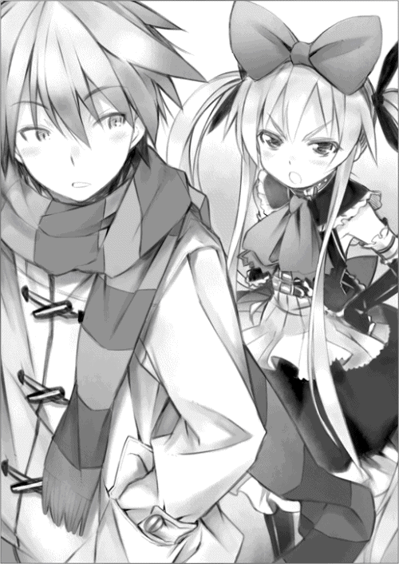
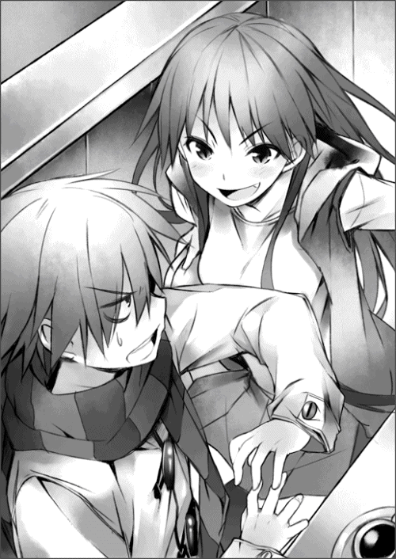
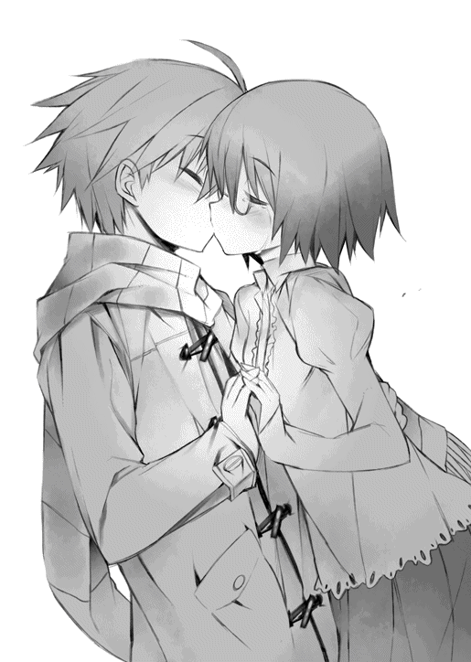

| 破小路ねるのと堕天列車事件 (スマッシュ文庫) | |
| 木戸実験 | |
| PHP研究所 (2010) | |
破小路ねるのと堕天列車事件
木戸 実験
山本 ケイジ

二月五日（金）
窓の外で、ぱらぱらと音がする。
雨でも降りだしたかと思い、目をやると、吸いこまれるような青い空が広がっており、そんな気配はない。
春に多いといわれる黄砂が、少し早く大陸から飛んできているのだろうか......。僕は、学生食堂の薄いお茶に口をつけながら、ぼんやりとそんなことを考えていた。
金曜日の放課後という時間のせいなのか、食堂は閑散としており、僕はひとり長机に腰かけている。グラウンドの方から聞こえてくる部活のかけ声の遠さが、孤独感をきわだたせる。
文芸部の部会が長くなるかもしれないから、先に帰ってて......僕のカノジョの破小路ねるのさんはそう言ったのだが、僕は終わるまで待ってると返答していた。明日と明後日はつき合いだして初めて迎える休日なので、今日はデートの約束なんかしながら下校したいなと思っていたのだ。
時刻は、午後三時を少しまわったところ。
放課後の誰もいない食堂には、ヒトがいたときの温もりがやわらかく残っている......こういう感じが、僕は好きだ。
「恋のツラさってのは、つまりは待つことのツラさなのよ」
同級生にそんなことを言った女子がいたが、僕はこんなふうに静かな空間で、薄いお茶を飲みながらヒトを待つのなら、永い待ち時間もいいものだと思える。
目を閉じて、カノジョのことや日常のささいなできごとに思いをめぐらす。
これが、いわゆる瞑想というやつなのかな、などと思いながら......。
気がつくと、食堂が横転していた――わけはなく、いつのまにか長机に顔をのせて居眠りをしてしまったようだ。
横向きの食堂の時計は、四時少し前を指していた。
「おはよ」
不意に、長机の対面から声をかけられる。
この声は、ねるのさんだ。
ひょっとして、僕の居眠りで待たせてしまっただろうか......そう思って、顔をあげた。
そこには――大きなメガネをカタカタ揺らしながら、
鼻から滝のように鮮血を流す僕のカノジョがいた。
「か......かわいい寝顔だったよ、直也君......うっぷ」
机や床を惨劇的に赤く染めながら、彼女はのんきにそう言った。
「ねるのさん......寝顔見ただけでそんなに興奮しないで」
彼女の妄想力はただごとではない。
特に異性がらみのことになると妄想の膨らみ方が酷いようで、急速に体温が上がり、鼻血を噴いてしまう。学校で、僕となにげない日常会話をしていても、どの言葉から何を連想をしたのか、たまに噴血して倒れていた。この間の告白のときもそうだ。
中学のときの彼女には、何人ものクラスの女子を血祭にあげてしまったという武勇伝まである（ただし彼女自身の血で）。
貧血気味のねるのさんを食堂の片隅に座らせて、凄惨なありさまの食堂を清掃する。
血液というのは、きれいに拭きとるのが難しい。調理場にあった雑巾とサンポールで拭いてはみているが、しみが残らないように対処しきれるだろうか。
「うう......ごめんね、直也君。またやっちゃった」
「大丈夫だよ。それより出血した後なんだから、ゆっくり休んでてよ。帰りに駅前で、焼鳥のレバーでも食べる？ 造血を促進するっていうし」
僕が冗談まじりで言ったことに、彼女の顔が紅潮する。
「レバー......精力増進............」
ぷしゅ。
缶コーラを開けたときのような、乾いた音がひびき、また彼女の鼻から血液が噴射する。
なるほど、レバーとかマムシとかの精力がつきそうな言葉もダメか......などと考えつつ、ポケットからティッシュを出して、彼女の血を拭きにかかる。
そんな感じで、血の処理をあれこれとやっていると、すっかりあたりは薄暗くなっていた。
その日の帰り道。
キンと冷えた空気の中、白い息を吐きながら僕たちはタコ焼きを食べていた。
住宅街近くの公園に、たまに屋台を出しているジイさんがいて、その年季の入ったタコ焼きは、生クリームでも入っているかのような豊穣な食感だと評判なのだ。
寒さも調味料になるのか、はあふうと食べるタコ焼きは、絶品だった。
しばらくの間、ふたりで顔を見合わせながら食べていると、なんだか照れくさくなってきて、つい目をそらしてしまった。
ああ、いかん。そういえば今日の本題をまだ話してないや......ちゃんと言わなくちゃ。
「ねるのさん、土日は何か予定あるの」
「土日？ えーと、明日はちょっと家のこととかやんないといけないから、あさっての日曜なら空いてるけど......何かあるの？」
「いや、その......なんつーか、つき合いだして最初の週末だしさ......なんかこう、デート的なことでもしない？」
彼女がまた鼻血を噴かないか心配だったが、特にそんなそぶりもなく、にっこり笑って、
「うん、しよ」
うれしそうにそう言ってくれた。
じんわりと、つき合ってるんだなという実感が胸を暖かくする。
なんだかくすぐったい気持ちになり、
「そんじゃ、缶ココアでも飲もっか、ねるのさん」
と、逃げるように近くの自販機へ向かった。
生まれて初めての、カノジョとおくる休日......いやがうえにも胸が躍るような心地になる。
いい日になりますように――。雲もなく澄みわたった夜空に、そう願った。
二月八日（月）・その零
千葉県警交通鑑識課の牛越巡査部長が、その事故現場への出動依頼を受けたのは、午前二時半を少しまわったころだった。
夜勤中で、署内で書類仕事を行っていた。
電話は、事故現場所轄の樫葉警察から。
「市内の高校に電車がつっ込んだんです」
それは、夜が明けたら日本中が震撼するような、重大な事故だった。
牛越は背筋を正すような気持ちで、仮眠中の上司にすぐに一報を入れ、大事故の現場へ急行することにした。
パトカーのカーナビに従い、現場の『県立西青高校』に向かったのだが、道すがらひとつ不審に思ったことがあった。
「......現場の西青高校......最寄りの濃田鉄道からけっこう距離があるな......」
おまけに、鉄道沿線から西青高校との間には、閑静な住宅街がひしめいている。その住宅街に特に事故があった形跡はないのを、横目に確認した。
現場の高校の校門前には野次馬が群がっており、中にはカメラを携えた記者風の人間も何名かいた。
それをかき分け、校門に張られた立入禁止のロープをくぐると、校内にいた警察官のうち、コートを着た初老の男がこちらに近づいてきた。
「おうおう、牛越じゃないか、今日夜勤だったのか」
タバコをくわえたまま、男は話しかけてきた。口の両端から煙がたちのぼっていく。
「あいかわらずのチェーンスモーカーですね、マツさん。ご無沙汰してます」
「県警本部には、もうだいぶ慣れたか？」
くわえタバコの男――松川警部補は、牛越が樫葉警察交通捜査課だったころの上司にあたる。
「おかげさまで。マツさんのご指導のたまものですよ」
「はっはっは、牛越よ、おべんちゃらは酒の席だけにするんだな。業務中までやってたら、発言に重みがなくなっちまうぞ......おっとっと、世間話してる場合じゃなかったな」
「ええ、かなりの大事件とお聞きしましたが、この学校が現場なんですよね......？」
牛越はあたりを見回した。そこら中に校舎の破片とおぼしきガレキが転がっているものの、校舎には電車がつっ込んだような痕跡は見えない。
「......？ もう、つっ込んだ電車の撤去は済んだんですか？」
「はあ？ 撤去なんか、かなりの大きさのクレーンを持ってこなきゃ無理......ああ、そうか。普通は一階部分に目がいくわな......」
そう言って松川は、頭上を指さした。そういえば、来たときから、校舎の屋上の方が妙にライトアップされていると思っていたのだが......。
見上げた牛越は、言葉を失った。
一両の電車が校舎に垂直につき刺さっていた......！
まるで天から降ってきたように、電車はその半身を屋上から、校舎にもぐり込ませていたのだ。
絶句する牛越を横目に見ながら、松川は説明を始めた。
「ご覧の通り、きわめて不可解な状況だよ。まるで、怪獣が卵の中から殻を破って生まれたような光景だな......。
午前一時半ごろに、どかんと音がして、付近に地震があったそうだ。おそらく、電車が校舎につき刺さったときの音なんだろうな......。
ああ、ちなみに校舎内に入った警官から、電車内も校内も無人であったと連絡があった。つまり、この事件による死者は、今のところゼロだ」
「何なんですか、これは......電車が空を飛んできて、つき刺さったとでもいうんですか......」
「仮にその線を疑うとしようか。加速をつけて、思い切り跳ねた電車がここまで飛んできた、としよう。
一番近い濃田鉄道から、この高校まで、ざっと一キロ。これは数トンある電車が飛んでくるには、けっこうな距離だ。おまけに濃田鉄道はほとんど高低差のない平坦な鉄道だ。物理的にはかなり厳しい線だと思うねえ......」
松川は、携帯灰皿に吸殻を落とすと、苦い顔で続けた。
「それとな......不可解さに拍車をかけるような情報が入ってね......」
牛越の顔は、呆然としていた。
目の前の光景を完全にありのまま受け入れることが、まだできていないようだ。
松川は、かまわず続けた。
「実は、さっき夜勤の濃田鉄道の職員をつれてきて、現場を見てもらったんだよ。今も現場にいてもらっているが、どうも会社の上司への電話で忙しいようで、ほれ、あそこの隅で電話してる背広の......。その職員がね、おかしなことを言うんだよ」
「おかしなこと......？」
「そう、なんでも、この電車は濃田鉄道で扱ってる型ではない......とな」
牛越がつばを飲む音が、はっきりと聞こえた。
松川はもう一本、タバコに火をつけながら言った。
「そんなバカなことあるか、この近くに鉄道は他にねえんだぞ、ってオレがその職員の兄ちゃんに詰め寄ったら、その兄ちゃんが携帯電話からネットにつないで、すぐ調べてくれてな......いやあ、なんでも携帯電話で検索できて、便利な世の中になったなあ。オレも娘に教わらねえと、時代に乗りおくれっちまわあ」
「結論を言ってもらえますか」
あいかわらず寄り道の多い話し方をする人だ、と牛越は思った。
「おっと、失礼......それでな、調べた結果、その校舎につき刺さってる電車な、どうも神戸のものみたいなんだよ」
牛越は、松川の言葉の意味を反芻した。理解につとめるものの、イメージがわかないのだ。
「神戸？ ......って兵庫県の神戸ですか？」
「そう。なんでも神戸の裏六甲を走る六甲鉄道ってのがあるらしくてね。そこの車両みたいなんだよ」
夜明けに近づいているのか、周囲の闇が次第に薄くなってきている。
「牛越、馬鹿を承知で結論するとな、この列車が飛んできた距離は、濃田鉄道からの一キロどころじゃないんだ。
この列車は、神戸から千葉の間の五百キロメートル弱の距離を、なんらかの方法で飛空してこの高校に真上からつき刺さったんだ」
牛越はただ立ち尽くしていた。
そんな馬鹿なことがおこるのだろうか？ なんらかのテロ？ ならばその目的は？ いや、それよりも、数トンある列車が空を飛んだりできるものだろうか？
思考は千々に乱れ、ほつれた糸はけっしてまとまらない。
やわらいでいく周囲の闇に反して、牛越の頭の中は混沌とした闇の中へと沈んでいた......。
＊
――世界の終わりは砂漠のイメージ――
気がつけば、周囲には広漠とした砂漠が広がっていた。
さっきまで街の中を歩いていたような、あるいは学校でいつも通りの昼休みを過ごしていたような......そんなおぼろな日常の断片が頭の中に浮かんでは消える。
しかしその断片の中に、なぜ僕がこんな砂漠の真ん中にいるのか、という疑問にこたえる手がかりはなかった。
どうやら僕は、突然こんなところに来てしまったらしい。
轟音に慣れた耳に静寂が不快な圧力をもたらすように、文明に慣れた人間にとって孤立は圧力になる。
突然砂漠の真ん中に一人ほうり出されたという不条理。ともすれば僕を押しつぶしかねない不安から目をそむけるように、僕は歩き出した。状況を把握する努力は、絶望を確定させることにしかならない......そんな気がしたのだ。
誰か人を見つけなければ、ただそう思った。
歩き出してすぐに、一本の線路が見つかった。
サビが浮きボロボロのそれは、何もない砂漠を両断するように、地平線の向こうまでまっすぐに伸びていた。
これをたどれば、幾人かでも人の住む街に着くだろうか、そう思い、線路上をとつとつと歩いた。
砂漠の暑さは、日本の湿気を含んだそれと違い、からっとしている。それは時として、砂漠を歩いているという状況を、僕の中であいまいにした。
無言で、何もない広い空間を、あるかもわからない目的地を求め、一人歩いている。僕の頭の中からは少しずつ状況がぼやけていき、かわりに線路の枕木と砂を踏む音でいっぱいになっていった。
さく、こつ、さく、さく、さく、こつ......。
これは迷子、そう、僕はただの迷子なんだ。
幼少のころ、買い物につれて行ってもらった初めてのデパートで、母とはぐれた。建物内の構造に詳しいわけもなく、あてもなく婦人服の迷路をさまよい歩いた。周囲の華やかなガラの服や、通りがかったおもちゃ売り場も、迷子にとっては、ただの障害物でしかなかった。
今もそうだ。
砂漠であるとか、たった一本の線路であるとか......何年も後に今日を振り返ることがあれば、これはある種の感傷を感じられる情景なのかもしれない。しかし、今の僕には、砂漠はただの広い空間で、線路は道標のようなものでしかない。
傍らに人がいなければ、どんな情景も意味をもたない。
あたりは少しずつ暗くなりはじめ、少し寒くなってきていた。
不思議と空腹や疲労は感じなかったのだが、それは精神も肉体も極度に疲れているせいなのかもしれない。
線路はいまだ途切れず、地平線の向こうへと伸びている。もうどれくらい歩いてきたのか、考えたくもない。
自分は生きてこの砂漠から出られるだろうか、そんな現実的な自問が少しずつ胸の奥からわきあがってくる、そんなとき、
砂漠が、
ある奇妙な変化を見せ始めた。
ぼう......と足元の砂の大地が青く光りだしたのだ......。
夏の夜、コンビニの店先に見る誘蛾灯のような光、とでもいえばこの色のイメージは伝わりやすいだろうか......。
僕は危険な状況かどうかの判断もつかず、ただ立ち尽くし、その光に見とれていた。
それは目のくらむような光ではなく、どこか眠気を誘うようなやさしい光......。
ああ、そういえば生まれる前にこんな光を見た......なぜかそう思った。
心が沈静していくような、寂しさにとらわれていくような、不思議な感覚......。
ふと、線路の伸びる地平線に目をやった。
するとそこにもまた奇妙な光景があった。
遠くで線路が起き上がっている......！
まるで今から空をとぶ鳥が、自分の目指す方向に向けて首をもたげるように、線路がその端を空に向け、浮かせていたのである。
地平線のかなたのことなので、起き上がっている根元の部分まではあまり見えないが、どうも僕がたどっているこの線路の終端が、その浮き上がっている部分のようだった。
空はさっきよりも闇に近づき、いよいよ足元の青光が映え、線路が宙で緩慢に動くそのさまは、まるで何かの儀式のようだった。
その線路はゆっくりと中空でねじれ、より高みを目指して空に昇っていく......。
僕はなぜかその光景を、貴いと思った。
二月七日（日）
「......とまあ、そんな感じの夢をちょくちょく見るんだ」
そう話を結んで、隣でクレープをついばむ自分のカノジョ――破小路ねるのに目をやる。
彼女は、アイスやら生クリームやらイチゴやらで身をパンパンにしたおぞましいクレープを、いかにこぼすことなく完食するかに全神経を注いでおり、こちらの話を聞いている様子はなかった。ちなみに彼女のクレープは、『ベリー☆マッチ』とかいう名前で、イチゴとブルーベリーとクランベリーとアセロラと生クリームがこれでもかと入っている。
「ぬむ？ ごめんね、ちょっと聞いてなかった」
視界の片隅に僕を入れながらも、彼女は依然『ベリー☆マッチ』から目を離さない。
「ああ......いいよ、食べてからで。メガネにだけはつけないようにね。後で洗うの大変だよ」
まったく、初デートだというのに、のっけからクレープにネトラレてるようでは先が思いやられる......。
もっとも、話題に困って、昨日見た夢の話なんぞはじめてしまった僕の話題のストック不足にも、問題はあったのかもしれないが。
彼女の横顔を見ながら、ふと、出逢ったころの彼女のことを思い出す。
高校に入学して、最初のクラス分けで同じクラスだったねるのさんだが、大きなメガネに文芸部という正統派の地味っ娘であったせいか、当初は僕の視線をプレデターのように透過していた。
そんな彼女を意識しはじめたのは、去年の十一月の文化祭だった。
僕は入学時から、いろいろなクラブにちょこちょこと顔は出していたものの、特にこれといって惹かれるクラブにめぐりあうこともなく、文化祭当日はお客様気分でふらふらとほっつき歩いていた（ちなみに僕のクラスの出しものは、「みんなの似顔絵展示」という覇気のないものだったので、当日の展示に人手が要らなかったのだ）。
喫茶店にタコ焼き屋台にお化け屋敷に......美術部の展示に映研の自主制作映画に軽音のライブ......。
僕はロック・ファンなので、特に軽音のライブには少しばかり期待していたのだが、肝心の演目はメロコア（＊）の出来そこないばかりで、聴けたものではなかった。パワーコード（＊＊）ばかり弾いてんじゃねえよ、ホント。
そんな感じで、気になっていた展示物はすべて期待したほどのものではなく、さっさと帰ろうかと思いながらも、惰性で校舎を徘徊していると、あまり立ち入ったことのない「国語準備室」で何か展示をやっているのに気がついた。
少し興味がわき、近づいていってみると、ドアの前で女の子が受付をしていた。
その娘が、破小路ねるのさんだった。
「ここは何部の展示？」
僕の問いに彼女は、
「文芸部です！ 部誌の展示をしています！ ご覧になるのでしたらこの虫眼鏡をどうぞ！」
と、緊張からなのか一息にまくしたて、彼女のメガネよりも大きな虫眼鏡を僕にさし出した。
虫眼鏡ごしに見えた彼女の目は、くりっとつぶらだった。
顔全体もよく見れば端整で、おぉ、この娘けっこうかわいかったんだな、と思った。
「文芸部の部誌は、虫眼鏡で見ないといけないような、昆虫サイズなの？」
「中に入ってみてください、すぐにおわかりになりますよ」
彼女は敬語をくずさなかった。ひょっとして僕がクラスメイトだと認識してなかったんじゃないだろうか？
もう少しこのかわいい娘と話していたい気もしたのだが、展示物を見てからの方が話題に広がりが出るか、と思い直し、国語準備室の中に入った。
準備室は、それほど広くもない縦長六畳といった間取りで、展示物らしきものは何もなく、がらんとしていた。彼女の言うところの部誌も、一見しては見当たらない。
ただひとつ気になったのは、部屋の真ん中に脚立が置いてあったことだが、それも何の変哲もない脚立で、詩や小説が書き込まれているというわけでもなかった。
「ひょっとしてあの娘......ちょっと脳内が残念な感じなのかな......」
人間が一番怖いことは「わからないこと」であると何かで読んだことがある。なるほど、意図のわからないそのシュールな空間は、少し怖かった。部屋から出た瞬間、瞳からハイライトの消えた彼女が、乾いた笑いをあげながらペティナイフで襲ってきやしないか......そんなヤンデレ妄想にとらわれる。
部屋を出たときの彼女へのリアクションをあれこれ思案していると、ふと脚立の真上の天井に何か貼ってあるのに気がついた。
......冊子だ。
『西青高校文芸部誌84号』と表紙にある。大きさはＢ５くらいの普通のサイズの冊子で、虫眼鏡は特に必要なさそうだった。脚立にあがって、ぺらぺらと部誌をめくってみたが、中身のフォントのサイズも、特別小さいというわけではない。
「これって......やっぱ元ネタはあれだろうな......」
部屋から出た僕は、彼女に向かって、
「オレはジョン・レノンか」
とツッコんでみたところ、満面の笑みが返ってきた。
ジョン・レノンとオノ・ヨーコの出会いのきっかけは、天井に小さく書かれた〝yes〟という文字を脚立にのぼって虫眼鏡で読むというヨーコの前衛作品だった......そんな話の劣化コピーを、文芸部の展示でやっても冊子が読みにくいだけに決まっている。
しかしこれがきっかけで、なんだかこの娘は変わってておもしろいな、と思うようになり、以後、クラスにいるときは彼女の言動に意識がいくようになったのである。
彼女を見ていてわかったことは、クラスでの彼女はなんとなく孤立していたということ。いじめ的な疎外とは違うのだが、彼女は自分から人の輪に入っていこうとしないうえ、休み時間はずっと本を読んでいるので、自然と彼女と周囲の間に壁が形成されているようだった（まあ、これは今にして思えば、妄想からの噴射型鼻出血による周囲の被害を懸念してのことだったわけだが）。
そんな彼女と、タイミングを見て話をするようになってくると、けっこうな読書量のたまものなのか、意外に話題が豊富であることがわかった。そして話題以上に、僕らの間には何か深いところで通じ合うものがあるような、そんな波長の一致を感じたのだ。
僕らの日常の会話は、マスコミの低劣な報道姿勢批判からマイク・パットン考察まで、実に多方面にわたりながら、ゆっくりと堆積していった。気がつけば、何を考えるときも、彼女ならどう考えるかな、などと思うようになっており、その......まあラヴ的な意味で好きになっていたようだった。
会話をかさね始めて二カ月目のあの日、僕は彼女に告白した。
「よし！ 『ベリー☆マッチ』攻略！ 次は『スト☆ロング☆ベリー』だ！」
彼女の食破宣言で、回想から我に帰った。ちなみに『スト☆ロング☆ベリー』とは、クレープにイチゴと生クリームとアイスをタワー状に積みあげる、もはやパフェと呼ぶべきシロモノだ。その爆弾のようなカロリーを思い、僕は陰惨な気持ちになる。
「クレープはもういいだろ......それよりねるのさん、ちょっとそこらへんぶらぶらしない？」
「ぬむ......そうね。なんかさっき言いかけてた話も、ちょっと聞きたいし」
実は、初デートだというのに、僕はたいしてプランを立てていない。
再三いろいろ話をしてきた僕らだったから、つき合いだしたからといって、急にカップルらしくはりきって特別な感じにすることに、違和感を感じた......というか、なんか照れくさかったのだ。
僕らはのたくた駅前まで歩く。その日は二月にしては暖かく、冬はゆるやかに終わりつつあるんだな、と思える陽気だった。歩きながらもう一度語って聞かせた夢の話を、彼女はゆっくりと噛んで味わうように聞いてくれた。
濃田鉄道初見石駅前に着いた。
休日だというのに、駅前はいつも通り閑散としている。たまにダイヤが乱れて、ホームに人があふれるときはあるが、それ以外で混んでいるところなど見たことのない駅だ。首都近郊にしてはのんびりとした空気が、僕はわりと好きだったりする。
少しだけ歩き疲れたのだが、ベンチのように座るところもなかったので、歩道の縁石に腰かけて話をすることにした。ほとんど地べたに座っているようなものだが、名前がいいじゃないか、〝縁石〟ってさ。
「えー......と、今の夢の話なんだけど......あたし夢判断の本っていくつか読んだことがあってさ......その夢もシロウトなりにだけど解説できると思うんだよね......」
「へえ、フロイト......だっけ、それって」
「うん、フロイトとかユングとかが、科学的に洗練したとされてるみたいね。あたしが読んだのは、ちゃんとした原書とかじゃなくて、占い本に近いやつだけどね」
「すげえな......なんか。なんでも読んでるって感じだな」
「ただの占い趣味だよ。占いが嫌いな女の子なんていないでしょ？」
そういえば、昔からクラスに一人は血液型や星座を周囲に訊きまわってる女子がいたっけ。その娘の机を中心に、ちょくちょく女子の人だかりができていたのを思い出す。
「直也君の夢には、いくつかの象徴的な要素があるわ」
「『砂漠』とか『線路』とか？」
「そ、あと最後の『青い光』も」
「へえ、それも意味があるのか......どんな意味なのかな」
先をうながす僕に、そのときちょっとした邪魔が入った。
どかあ！
初見石駅舎の屋根から、かなりの勢いで怪鳥が飛び出し、この世の鳥のものではないおぞましい鳴き声をあげた。
ごげらあああああああああああああああ......（×３）
「......三時か......？」
「まだ撤去されてないのね、あの怪鳥時計」
彼女が怪鳥時計と評したそれは、初見石駅の名物になるはずだった鳩時計だ。
発注過程の意思伝達にどんな不具合があったのかはわからないが、仕上がったシロモノは赤と青の原色が体中にまだらに塗られた、聴いたこともない鳴き声で、好き勝手なタイミングで時間を知らせるという、近所迷惑きわまりない怪鳥だったのだ。とりつけた業者は設置した後に夜逃げしたとかで、設置後三カ月経った今でも撤去されず残っている。撤去しようとした駅員が、その怪鳥の飛び出す勢いで五メートルふっとばされて屋根から落ちたという噂から、近隣住民は『バードン』とあだ名をつけて恐れる一方、珍風景を好む好事家がたまにやってくるというのが現状だ。なかなかグダグダでよろしい。
「......あー、バードンに気をそらされちゃったけど、夢判断の続きを聞かせてよ」
「ああ......そうね」
少しきまりの悪い感じがしているようだったが、彼女は気をとり直して話しだした。
「えー......と、そう、象徴......だったわね。
『砂漠』からいきましょうか。これは『孤独感』とか『絶望』の象徴なのね。砂漠には水がほとんどないでしょ？ まさに、人生に潤いが欠けている、という潜在意識からの連想なんだと思うわ。
次に『線路』ね。線路自体は自分の属している『社会』のシンボルなんだけど、夢の内容をよく訊いてみれば、『サビついた線路に沿って一人で歩く』って状態だったのよね。線路の状態は自分の周辺の社会のイメージ......一人で歩くってのは、そこからひとり浮いているっていう意識......」
膝の上に置いた手のひらに、じわっと汗が浮いてくるのがわかる。心中の動揺がにじみでてしまったのだろうか。
そう、彼女の診断は当たっている......！
「総合して言えば、直也君はね――
それがサビついたものとしか思えないほど、現状に退屈していて、しかも現状になじみきれてないことで孤独を感じている」
......鳥肌がたった。
まったくもって、彼女の言う通りなのだ......。
僕は自分のことを、つまらない人間だと思って生きてきた。
生まれてから十六年間の人生で、これといって自分固有の才能をかけらも見つけられず、没頭できるような趣味さえ見つかっていない。だからたぶん、このまま漠然と二年過ごして受験期間をむかえ、周りの熱気にあてられてなんとなく必死に勉強し、浪人はするかもしれないが大学に入って、それから就職して年をとって......それは立派な人生だが、サビが浮いている......ように思う。
何かほかの可能性の種でも落ちてないかと、いろんな部活を見てまわったりするものの、わずかな体験入部では自分がモノになるかどうかなんてわからない。二年も三年もやって、結局もっと有効な時間の活用法があったんじゃないか、なんて思いたくない。だから......だから部活ひとつ選ぶことができない......。
焦りと、過ぎた時間ばかりが、ただただ降り積もる......。
僕が迷子なのは......砂漠の夢の中だけじゃない......。
「大丈夫？ 直也君」
彼女が僕をのぞきこむような姿勢で、心配してくれていた。
「ごめん......オレ、ちょっと寝不足なのかも」
「そう......いったん帰る？」
「いや、平気。それより最後まで聞かせて。『青い光』は？」
そうだ、僕には......。
「『青い光』はね......」
こんな僕を、心配してくれる人がいる......。
そんなたあいのない事実だけで――
「『青い光』は......『ゆっくりと成長するための力』......」
――僕はいつか砂漠から脱出できる......そう信じられる。
僕の『青い光』は、きっと彼女だ。
駅近くの商店街を、ふたりならんで歩く。
不況のあおりか、居並ぶ店は半分ほどが閉まっており、「テナント募集」のはり紙も目立つ。
頭上の透明なアーケードの掃除も、あまりされている様子はなく、清潔な印象は受けない。しかし、たまったほこりが太陽光の影になるのか、アーケード内に独特の光の紋様が落ちてきており、これはこれで味わい深い。
その商店街の片隅の古書店に、彼女は入りたがった。
彼女の要望にこたえ、入店はしたものの、店内は狭いうえに薄暗く、そこここにうず高く書物が積まれているものだから、どこがレジなのかわかったものではなかった。天井の隅にはクモの巣まではっており、書店というよりも、錬金術研究所といったおもむきだ。
彼女は水を得た魚の勢いで、さっそく本棚の物色をはじめた。まさに文芸部員の面目躍如たる旺盛な読書欲だ。少し時間がかかりそうだったので、僕も本の山から見つけた昔の音楽雑誌を、立ち読みして待つことにした。さいわいそれはフランク・ザッパの全アルバム（六十枚強！）特集の号だったので、読みごたえは十分だ。
しばらくして彼女は、一冊の本を会計して戻ってきた。本には『量子力学入門』とあった。
「なんだか、ムズかしそうなのを買ってきたね」
「ああ、これ？ あー、そうね。あたしみたいな初心者にも、読みやすいといいんだけど......」
「なんかすごいな。さっきの夢判断といい、いろんなもの読んでるんだ」
彼女は定期テストなんかも、なかなかの成績だと聞く。普段から多方面に見識を広げていると、基礎的な思考力が底上げされていくものなんだろうか？ ものなんだろうな。
「すごくなんかないよ、別に。ＳＦ趣味の延長だよ」
「ＳＦ？」
「うん、ＳＦでよくあるパラレル・ワールドって言葉は知ってるよね？ 今、この世界と並行して存在するもうひとつの世界ってやつ......」
「あ、なんか知ってるよ。たとえば、オレとねるのさんがつき合ってない現在も、並列して存在してる――みたいな感じのことだよね」
「まさにそうね、人間が日々行っている『選択』一つひとつに対して、いちいち世界は分岐して並走してるっていう概念ね。
で、そんなＳＦの是非を真剣に検証してるのが量子力学なの」
「へえ......」
「ま、厳密に言えば、ある実験結果の観測問題に対してのひとつの解釈として、世界は複数存在していることを仮定して論じてるって感じだから、ＳＦネタばかりってわけじゃないみたいだけど......なんだかロマンがない？」
知的好奇心を満たすというのは、相応の熱気と行動力を必要とする行為だ。最近はインターネットの検索によって、その負担は大きく軽減されているが、そこで得られる知識が表面的であるというのは誰もが感じていることのはずだ。きちんと〝知る〟ためには、現在でもなお書物と向き合うことが必要なのだ。僕は、知識の獲得のために、安易な検索で終わらない彼女を素直にすごいと思える。
「ほんと......すごいな、ねるのさんは」
「？」
何が？ という表情で、小首をかしげてこちらの顔を上目づかいで見てくる。
ああ......くそ、だきしめてぇ。
彼女の出血癖さえなければなぁ......。
「ところで直也君、さっきの夢の話なんだけど」
「ああ、そうだ。結局、僕の夢の意味って、『退屈な僕の人生だけど、彼女ができて前向きに生きる気力が出てきたぞ』くらいで考えればいいんだよね」
彼女はうなずきつつ、ちょっと赤面して、
「ああ......うん、まあそうなんだけど......その夢で訊きたいことがあってね......」
なぜだか歯切れ悪く、そう言った。
顔をさらに紅潮させつつ、彼女は、
「その......そのね......夢の中の線路に『電車』は走ってなかったかな？」
「え......いや、別に走ってなかったけど......『電車』は何か意味があるの？」
「あ......えっとね、なんというか......電車って連結部がガコンガコンってさ......」
彼女の歩みが止まる。
加速度的に、顔の紅潮が進む。
まずい。......鼻血だ。でもなんでだ？
疑問は感じつつも、すばやくポケットティッシュをいくつか取りだし、噴血に備える。
「むぐ......ごめん、直也君......あたし、もうでちゃうぅぅ......」
ぷしゅ。
............。
路上に扇状にひろがる血痕の文様は、拭きとるには少々大きすぎた。
僕らは後日の雨に期待して、その場から逃げ去ることにする。
しばらく物陰で休んだら彼女の鼻血が落ちついたので、冷却のため喫茶店で冷たいものでも飲むことにする（失血したことを考えると、もっと鉄分豊富なものがよかっただろうか）。
さすがに、パフェなどの高カロリースウィーツは血圧が上がると思ったのか、彼女は殊勝にオレンジジュースを飲んでいる。
「うぅぅ......ごめんね、直也君。またやっちゃった」
「いいよ、別に。これくらいの苦労かけてもらったほうが、いかにもつき合ってるって気がして嬉しいくらいだよ」
あ......しまった。
彼女の顔が、また紅潮し始めてる。
そうか、こういうカレシ的発言もダメか。告白もダメだったもんな。
話を別の方向に持っていかないと......。
「あー、そういえば、さっきは何の話だっけ」
「『電車』の意味だったね。あ......あのね......うっぷす......」
これもダメだ。そういえば、さっきはこの話題で鼻血噴いたんだった。バカか、僕は。
「あーいい、いい。なんか関係ない話......」
強引に話を切りかえつつ、テーブルの下の右手で携帯電話をいじる。
ネットで、夢判断の『電車』の意味を検索してみよう。
こういう、どこにいてもネット検索ができる手軽さは、携帯電話が文化へ昇華する強力な足がかりだったんだろうな、と思う。
（『夢判断』......『電車』......）
あった。
夢判断における『電車』は、いくつか意味があったが、その中に『男女の深いつながり』があった。
これか。
鼻血の理由は理解できた。
さあこれを、さっきの夢判断とかけあわせて、彼女が何を心配して『電車』の有無を訊いてきたのか考えてみよう。
『彼女ができて前向きになってきてる』という診断に、『男女の深いつながり』......。
そうか。そういうことか。
これは何か言及して、不安を解いてやる必要があるかな......。
「ねるのさん、落ちついた？ そろそろ出ようか」
僕のアイスコーヒーがまだ残っているが、かまわず店を出た。カッコつけて注文してしまったものの、苦くてちびちびとしか飲めなかったのだ。
彼女が血を噴射してもいいような、空間的にひらけた場所をいろいろ考えた結果、結局われらが西青高校の校舎裏まで来てしまった。僕が先月末に、告白を断行したあの場所だ。駅前から徒歩で二十分ほどかかった。
休日の校舎は、別段いつもと変わったところもないのに、その中に人がいないというだけで、校舎が呼吸を止めているかのように静かに思えた。
「『電車』の意味、わかったよ。携帯で調べてみた」
着いて少し間をおいてから、僕は言った。
彼女はわずかに肩を震わせ、顔を赤くした。
多少鼻血は噴くかもしれないが、これは言っておくべきことだと思ったので、僕はかまわず続ける。ごめん、ねるのさん。
「オレはその......急いで今以上の関係になるつもりはないんだ。だって、ねるのさんの出血がどうなるかわからないだろ？」
彼女の鼻から、つっと一筋の赤い糸が口元へとつたっていく。
もうちょっと、いけるか......？
「だから...ゆっくりやっていこうよ。少なくともオレは彼氏彼女になれて、こうして休日に会えて、それで、学校でしか会えなかったときよりも話す時間が増えて......それだけでも十分嬉しいんだからさ」
彼女の目がうるんでいくのがわかる。
鼻血の量はさっきの一筋だけだ。
もうちょっと踏みこんでみるか......彼女のためにも、もう少し男性に慣れてもらったほうがいいとは思うしな......。
「さ、夕方までにはまだ少し時間があるし、どこか行こうか」
そう言って、彼女の左手をとった。
午後四時過ぎだっただろうか。
空はのどかに晴れ、澄んだ空気に鳥の声がよく冴えていた。声や音に色があれば、きっとこの青い空を背景に美しい絵画が描かれていたに違いない。
見たこともないほど噴きだした彼女の鼻血の朱と空の青が、今、あでやかな絵画を描いているように......。
全身に彼女の鼻血を浴びたその日の帰り、お巡りさんの職務質問を受けた。
まあ、血まみれの高校生が歩いてたら、普通はそうするわな。
＊＊
寒い廊下で、ひとりだった。
家の中でも、二月の夜の廊下はまだまだ冷えるのだな、と思う。
居間のほうはまだ明かりがついており、あの人も母もまだ起きていることがわかった。
テレビでも見ているのか、ときおり談笑のような楽しげな会話が聞こえる。
廊下に時計はなく、もう何時間正座しているのか、わからない。足の感覚はずいぶん前からなくなっている。
......どうして、こんな罰を受けないといけないのだろう......。
何年も前、亡くなった父と行った旅行のことを思い出していたら、さっき枯れてしまったと思っていた涙が、またわいてきた。
......戻りたい。
......何か悪いことをしたのだろうか？
今日は帰る時間が少し遅く、お風呂の当番ができなかった。
でも、それはこんなに正座をしなくてはならないほどの、罪なのだろうか？
......お父さん......。
この先、ずっと耐えなければならないのか......。
あんな人......。
お母さんも......。
......死んでしまえばいいのに......。
［濃田鉄道］沿線の高校に衝突事故？
八日午前一時三十分ごろ、濃田鉄道初見石駅付近の高校に、一両の電車が衝突する事故があった。現在死傷者は確認されていない。
事故現場から付近の線路までは、一キロほどの距離があり、警察が原因を調査している。
（毎朝ｊｐ 二月八日ヘッドラインニュースより）
二月八日（月）・その壱
クラスの連絡網で休校の連絡が入ったのは、午前七時半ごろだった。
空飛ぶ電車の事件のことは、どのチャンネルの朝のニュースでも報道されていたので、連絡が入ったときに特に驚くことはなかった。
それにしても、どうにも現実感にとぼしい破天荒な事件だ。
それが自分の通う学校に起こった、というのもどこか絵空事めいた、しらじらしい印象に拍車をかけている。そのせいか僕は特に焦ることもなく、いつも通り紅茶を飲んだりして朝を過ごしていた。こんな身近に起こったことなのに、ほとんど動揺しない自分の心に、ほんの少しあきれながら......まあ、死者が出ていれば、話は違ったかもしれないが。
ニュースの多くは、テロリストのしわざである可能性を示唆する内容で、実際に官庁には犯行声明も多数届いていると報道されている。
しかし、どの報道も、実際に何が起こってそのような現象になったのか、ということについてはまったく具体性を欠いていた。
神戸の列車が、たった一晩にして千葉県の高校に刺さる。しかもその高校は近隣の鉄道から一キロも離れており、鉄道付近の家屋には傷ひとつない。
まさに、列車が空を飛んできたとしか思えない事態だ。
世紀の不可解現象に、僕の中の野次馬根性と呼ぶべき凡俗な好奇心が、ほんの少しだけ首をもたげる。
そうそう見られない絵ヅラが、徒歩十数分のところにあるんだ、行って見てみてもいいか、という気持ちになってきた。
僕はコートをはおり、二月の寒空の下、誰もいない家を出た。
冬の住宅街は、まるで息を潜めているかのように生活感が希薄で、夢に見る青い砂漠のイメージが、僕の目の中でそれに重なる。
目の中の砂漠は夜で、漆黒の空と青く光る大地の冷たい印象が、冬の寒さを感じている僕の皮膚と感覚的につながっていく......。
白くたちのぼる自分の吐く息が、僕の緩慢な生命を空気中に溶かしているような......そんな錯想を創っていく。
スティーブン・マルクマスの『freeze the saints』を、小さなハミングで口ずさみながら歩く。こんな寒い日に似合う、どこか悲しい歌だ。
しばらく歩きながら、冬の寒さともの悲しいメロディにひたっていた。
口ずさむ旋律が、僕の好きなパートを刻み終えたとき、
「そこまでだ、砂畜生」
と、背後から声がした。
その聞いたこともない蔑称らしき名は、どうも僕を指しているように思えた。
振り返ると、装飾的な黒い衣服......いわゆるゴスロリ・スタイルで青い髪の、かわいらしい女の子が立っていた。

身長は小さく、百五十センチ少々といったところか。瞳も赤く、人種がわからない、というか何次元の人かわからない。アニメか何かのキャラのコスプレだろうか、あまりメジャーなキャラではないようだが......。
「お嬢ちゃん、僕を呼んだのかな？」
「お嬢ちゃんではない！ 我にはコッペリアという名があるのだ。無礼にもほどがあるぞ、砂畜生」
だったら僕にも砂島直也という名前がある。
まあいい、子供の言うことだと聞き流すことにしよう。
っていうかなんだよ、コッペリア？ 欧米の子なのか？ それにしては、えらく流暢な日本語に聞こえたが......。
「それでコッペリアちゃん、僕に何か用なのかな」
「うむ、よくぞ聞いたな、砂畜生。貴様からメス豚のにおいがする。貴様、オナゴと交際をしておるな？」
いまだ教育を受ける身で、教育の何たるかなどわかりはしないが、この娘はしばいておいたほうがいいのではないだろうか......などと考えつつ、返答する。
「ああ......カノジョはいるけど、それがどうかしたの？」
「うむ、ただちに別れよ」
..................。
......はあ？
まったく想定しなかった申し出に、脳内の回線がうまくつながらない。
なんだって？ 別れる？ 僕とねるのさんが？ 先月つき合い出したばかりなのに？
いや待て待て、こんな見知らぬアングロサクソン（たぶん）の子供が、ねるのさんを知っているわけがない。これはきっと、偶然見つけたかっこいいお兄さんにかまってほしいがために、ついつい突拍子もないキツイ言葉をかけててしまう、子供式のツンデレ・サインに違いない。僕がここでとるべきは、渋い大人スメルあふれる対応なんだ！
「コッペリアちゃん......サインはダメだけど、握手くらいならいいよ（←大人スメルあふれる対応）」
「戯れるな、十人並み」
くっ......。ヒトの平凡な容姿を、ばっさりと............。
僕が心に受けたダメージなど、意に介した様子もなく、青髪ゴスロリの子供は続けた。
「どうも、我の言うことを真剣に受け止めている様子がないな。どこやらに不明な点でもあったのか？」
どこやらどころか、全部不明だ。
だが、まあいい、どうせヒマなんだ、少しだけ子供の戯言につき合ってみよう。
「オーケー、わかった。真剣に君のいうことを検討してみよう。でもそうすると、訊かなきゃいけないことがあるね。どうして僕は彼女と別れなきゃいけないのかな？」
「わからぬか？ お前は砂男なのだぞ。人間とつがいになってしまっては、世界に危機がおとずれてしまうこともある。そうなった場合は、すみやかに伴侶と離別する――それが核の外に住む砂男のしきたりではないか！ 忘れたとは言わさぬぞ！」
............。
..................忘れた以前に、意味がわからない。
わかることといえば、この娘の脳内ではかなり強固に電波な設定が仕上がっていて、いちから訊くと多大な時間をとられてしまいそうだ、ということくらいだろうか。子供の相手は根気がいるものだろうが、さすがにこれはちょっとウザい。
よし、ビジネスライクに中座しよう、それがいい。
「えー......っと、コッペリアちゃん？ ごめん、訊かなきゃいけないことが増殖しちゃったな。正直どれから訊いたらいいのか、途方にくれてるんだけど......今日はちょっと所用もあるし、日をあらためてってことにしない？」
するとコッペリアと名のる少女は、驚いたような表情を見せ、
「まさか......貴様、しきたりを知らぬというのか......いや、そもそも自分が砂男であることさえも知らぬのか......」
「うん、まあ、ありていに言えばそうだね」
「なんということだ......確かにしばらく核外の砂の民とは、直接の折衝の場をもっていなかったが......まさか、伝承すべきしきたりばかりか、自らの系譜までも伝えておらぬとは......！」
少女はアスファルト道路に手をつき、よつんばいになりながらブツブツ何かつぶやいていたかと思うと、突然立ちあがり、僕を指さし、
「貴様の親に会わせい！ 重大な規律違反だ！ 罰せねばなるまいぞ！」
......少しムッとした。
なんでこんな挙動不審な子供を、自宅につれて行かなければならんのだ。
うちの親は......。
「父さんは十年前に病気で死んでるよ。母さんも今日は仕事で家にはいない」
......そんな状態だ。
どうだ、重い事実をつきつけてやったぞ、相手に踏みこむことで気まずくなることもあるんだ、クソガキ......！ という気持ちで少女を見ると、
「そうか、おそらくその父のほうが砂男だったのだな......こんな大事なことを伝えぬわけがないものな......」
と、悪びれるふうもなく、変わらず妄言を続けている。
もうこれ以上つきあっていても、ただの時間の浪費だろう、そう思い、
「じゃ、コッペリアちゃん、僕はそろそろ行ってもいいかな？ ちょっと行くところがあってさ......」
少しのあいだ少女はうつむき、何か思案して黙っていたが、思いつくことがあったらしく、顔をあげて、
「うむ、わかった。今はまだ時期尚早のようだから、今日のところは立ち去ろう。しかし遠からず貴様と我は会うことになると思う」
「時間があれば、そのときまた話にもつき合ってあげるけど」
「いらざる口をはさむな！ ......次に我が貴様に会いに来るときには、貴様はオナゴと別れる決心がついていると思う。だが、もし......もしそのときを迎えてもなお、貴様がオナゴと別れぬと申すのなら――」
少女は、その花弁のように可憐なくちびるを開き、口腔内から白い球状のものを、ひとつ、ふたつ、と地面にたらす。
「..................え？」
それは、眼球だった。
少女の唾液にまみれたそれは、どこかあでやかな光沢で、緩慢に道路を転ぶ。
現実感のないその光景に僕は酩酊したのか、眼球というのは体内になければ意外と小さく見えるものだな、と状況にそぐわぬ所感をのんびりといだいていた。
「貴様とオナゴ、いずれかの死をもって離別してもらうことになるからな――」
少女はそう言うと、こちらに背を向け、歩いてゆく。
僕はといえば、いきなり宣言された害意にあっけにとられ、特に呼びとめることもできず、ただ立ちつくしていた。
あとに残った眼球は、なんだか気味が悪かったので、おそらく造りものだろうと勝手に決めて、特にふれたりはしなかった。
二月八日（月）・その弐
テレビでの大々的な報道のせいなのか、西青高校の周囲には野次馬とマスコミ関連の車両や記者が、フジロックのような人だかりをつくっていた。
僕はひとまずその雑踏のすきまを縫い、事件の現場を近くでひと目見ようとこころみたのだが、どうにも人間の圧力でうまくいかず、行きつ戻りつしていた。
不思議なもので、周囲に人間が多ければ多いほど、一人ひとりの他人の価値というのは希薄になっていくものだ。それはつまり、僕がまぎれこむ群れが大きくなればなるほど、僕は孤独に近くなっていくということ......。
僕の視界に、夢の砂漠がちらつきだした......。
校門が閉鎖されているのか、遠くに見える校内に、野次馬や記者が入りこんでいる様子はない。かわりにパトカーや警官がいくらか見える。
そしてなによりも目をひくのが、校舎に垂直につき刺さった電車。
赤色と銀色でその肢体を染めた、ウルトラマンのような色あいの電車が一両、校舎に垂直に刺さっている。
テレビで見たときも感じたことだが、実際に直面してみても、なにかのモニュメントのように作りものめいた嘘くささは変わらなかった。
「モニュメントだとすれば、さしずめタイトルは『銀河鉄道の悲しみ』......とかかな」
宮沢賢治の小説に出てくる空飛ぶ列車が、運行中の事故で垂直に落下してくる奇矯な動画が、脳内で再生される。
月夜にその身を投げるように、天空から堕ちる一両の列車......なかなかに破滅の美を感じる耽美かつシュールな絵ヅラだ。うん、嫌いではない。
と、そんなふうな空想遊びに耽溺する僕の右肩に、なにか固いものがコツリとのっかった。
右にわずかに首をまわすと、ひやりとした。
それは女の顔だった。見知らぬ女が僕の背後から、右肩に顔をのっけている。
状況的には気味が悪いが、健全な十代男子の僕は、背中に感じる女性の体温に関心がいくのだった......。
「『銀河鉄道の悲しみ』か......うーむ......しかしそのタイトルは阿井渉介先生の『銀河列車の悲しみ』とかぶってしまってるんじゃないだろうか......？」
背中に全Ａ―神経を集中させる僕をよそに、女は僕のたあいない独白に、なにやらダメ出しをしている。
というか、ささやかな個人的タイトルにまで、いちいちパクリ嫌疑をかけるな。
まあ、それはともかく、そろそろ根本的な問題にツッコまねば。
「あの、ずいぶん親しげに密着していただいているようなんですが......どちらかでお逢いしましたっけ？」
「いーや、全っ然、初対面」
言いきった。
世の中には、呼吸するようにスキンシップをするフランクな女性がいると聞くが、この人はそういう類の女性なのだろうか？ そ......それとも僕に一目ぼれしたとか......？
その女性は、スッ、と僕から身体を離し、
「うん、それじゃ後先になっちゃったけど、ちゃんと自己紹介とか話とかしましょうか」
少し残念な心地をいだきながら、僕はあらためて、その女性の全体像を眺める。
やや悪趣味な真紅のベストにチェックのスカートをはいた彼女は、なかなかの長身で、すらっとした体つきだった。長身痩躯とはこういうことなのだろうが、出るところもほどよく出ていて......まあ、体躯の描写はこの辺にしておこう、なんか気持ち悪いヒトになりそうだし。髪は、静謐な河川を思わせるような美しい髪質で、それを長く、腰のあたりまでストレートに伸ばしている。顔も、十代のあどけなさをたたえながらもキレイ系の美人だし、この女性がグラビア・アイドルだと言われても、僕はグラビア業界の人材不足を嘆いたりはしないだろう。
「君......砂島直也君でしょ？」
「え......？」
突然、自分の名前を言いあてられ、僕は言葉を失う。
「いやー、あたしすでに君のことよく知っててさ、もちろん対面して話すのはこれが初めてなんだけどねー」
こんな美人に認知してもらえるような、非凡の才や甲斐性が僕にあっただろうか、と自らをかえりみてみたが、思いあたるところはない。女性は、そんな僕の困惑する表情を見て、愉しげな顔で、
「あはは、ちょっともったいぶっちゃったけど、実はそんなたいした話じゃないんだ。混乱させてたら、ごめんねー。じゃ、自己紹介するねー。
はじめまして、砂島直也君。西青高校三年、文芸部部長の牛越瞳です。うちの部員の破小路ねるのが、いつもお世話になっております」
ああ......そうか、やっとつながった。
つまり彼女――牛越瞳先輩は、ねるのさんとは部活が一緒だから、ねるのさんづてに僕の話を聞いていたか姿を見ていたかしたのだろう。っていうか、文芸部なんて地味な部の部長が、こんな美人でいいのかよ。

「ときに、砂島君。君もこの飛空列車事件に興味があると見受けるが、どうかなー？」
「......まあ、興味がないといったら嘘になりますね、こうして野次馬しに来てるわけだし」
「うんうん、そうだよねー。当然、興味ゆんゆんだよねー。いやあ、これはね、もう超常現象と言ってしまいたいくらいの不可解な事件だよねー。こんな事件に警察の古式ゆかしき現場百辺の調査なんて通用しないよ。求められるのは、御手洗潔のごとき奇想の名探偵！ これしかないよ！」
ミステリオタの匂いをプンプンさせつつ、牛越先輩は演説をはじめた。
やべえな......、この人もさっきのコッペリアと同類っぽい。ヒトの時間を食いつぶす妖魔のたぐいだ。
そんなヒキ気味の僕のテンションを、コッペリアと違い、牛越先輩は感じとったらしく、
「あー......はっはっは、ごめんごめん、あたし話してると結構まわりが見えなくなるんだよねー。まあ、なんだ、要はねー、この事件についてみんなでいろいろ推理しようって、文芸部の連中と言っててさ」
「ああ......いいんじゃないですか。文芸部ってよりはミステリ研究会の領分っぽいですけど」
「いいのよー、本格ミステリの堅牢な構成は、純文学を書くときに大いに役に立ったりするんだからー。坂口安吾だって、推理小説書いてるし」
残念ながら、僕に小説を書く素養はないので、文学とミステリの互換性はよくわからない。今度、ねるのさんと話すときの肴にでもしようか。
「さて、砂島君。その文芸部の集まりってのを、今から駅前の喫茶店でやろうと思ってるんだけど、君も来ない？ 破小路も来るしさ」
「オレ、文芸部でもなんでもないですよ。いきなりそんな場にうかがって、アウェイ感を全身に浴びるのはごめんですよ」
「あー、大丈夫、文芸部っつっても、あたしと破小路のふたりだけだから。つーか、よかったらそのまま入部してくんない？」
さっきこの人、文芸部の連中って言ってなかったか？
そんな誇大広告的発言に悪びれるふうもなく、牛越先輩は続ける。
「いやー、昨今の文芸部員ってのは、軟弱なラノベ読みばっかりでねえ、純文学はおろか本格ミステリの文章さえ拒絶反応を起こす始末さ。だからさ、みんな解雇しちゃったー」
そういえば、文芸部の部長が代がわりして、部員が大量に辞めたと聞いたことがある。
まあ、こんな生半可なオタクを嫌う人が部長では、天性の読書家・ねるのさんくらいしか、在籍は難しいかもしれない。他の文芸部員が辞めたのか辞めさせられたのかは、わからないけど。
というか、根本的な問題として、
「オレ、たいして読まないんスけど、本......」
僕にまで、ねるのさん級の読書遍歴を期待されても困るっての。
初見石駅前の喫茶店『サマー・ベイブ』は、元バンドマンの店長が、好きな音楽をかけながらのんびりとやっている店で、店内の間取りも広いためか、西青高校生のたまり場になりやすい。昨日、ねるのさんが鼻血を出した直後にやってきたのも、この店だ。
牛越先輩と店内に入ると、ほどよい暖房の暖かさの中、ペイヴメントの『shady lane』が流れていた。いい感じだ。
学校が休校のせいか、店内には僕らのほかに二組のお客がいたが、いずれも高校生くらいの背格好で、西青高校の生徒と思われた。彼らは僕らのことなど気にも留めず、自分たちの会話に熱中していた。ま、おそらく話題は僕らと同じ、朝の事件のことなんだろうが......。
その二組とは別に、店の一番奥の窓際のテーブルにねるのさんが座っていた。
ねるのさんは、私服のレースのブラウスを着ており、とてもかわいい。牛越先輩はきれいな人だが、やはり僕にとって、ねるのさんの放つ癒しのオーラにまさるものはない。
テーブル上に、見ただけでゲップが出そうなキング・サイズのパフェがのっていることさえも、かわいく思えてくる。
「よー、破小路。一番いい席とれてんじゃないか」
と言って、先輩はその長い髪を優雅にゆらしながら、ねるのさんに声をかけた。
こちらを向いたねるのさんは、来るはずのない僕が来たことに驚いたのか、豆鉄砲に撃たれたような表情をした。それを見た先輩は、
「はっはっは、あんたのカレシが学校近くを徘徊してたから、捕獲してつれてきたぞ、喜べ」
と、いたずらが成功したときの悪童の顔で言った。
そんな先輩を見たねるのさんは、あたふたと嫌な汗をかきつつ、
「ああぁ......直也君、なにか先輩にご無体なこと言われて、むりやり引っぱられてこられたんじゃあ......」
場の空気が、わずかにぐにゃりと歪む......。
「なるほどねー。破小路が、あたしのことをどんなふうに思ってるか、よーく伝わった」
先輩は不気味な笑顔をたたえ、ねるのさんの向かいの椅子に腰かけた。
「心配しなくとも、なにも理不尽なことはしとらんよ。破小路と一緒に推理披露会をするって言ったら、ホイホイついてきただけだよ」
そんなに能動的についてきた記憶はないが、まあ、大意としてはまちがっていない。
ねるのさんがこの事件にどんな見解をいだいているのか、ということに僕が興味をもっていたのは事実だし。
「ほれ、つっ立っとらんと、砂島もそっちに座れ」
と、当然のようにねるのさんの隣の席をすすめられた。
僕としては、肩の接触とかで店内が鮮血に染まらないか、不安でしかたないのだが......。
かといって先輩の隣に座るのも、ねるのさんに対して不実な構図になるのかもしれないな。なかなかに難しいものだ。
僕はけっきょく、接触に最大限注意をはらいつつ、ねるのさんの隣に座ることにした。
「さて、それじゃあ推理発表の前に、今回の事件の謎を簡単にふりかえってみようか」
そう言って先輩は、マンゴージュースで軽く口を湿らせながら、ぶ厚い革の手帳をとり出した。
ねるのさんが二杯目のパフェで忙しそうにしているので、ここは僕が合いの手を入れる必要がありそうだ。
「オレも、ニュースでいくらかは知ってます。最たる謎は、学校につっ込んだ電車が周辺の住宅にまったく被害を与えていないこと、ですよね」
先輩は口もとに笑みをたたえ、僕の補足をする。
「そうだねー、西青高校は付近を通る濃田鉄道から、少なくとも一キロ以上距離があるから、電車の車両が脱線によってつっ込んだんであれば、近隣の住宅になんらかの被害が出ていてしかるべきなのに、それが一切ない」
「くわえて、まるで空から落下してきたように、垂直に校舎につき刺さっているのも、謎ですよね。いったいどんな現象がおこれば、あんなつっ込み方をするってのか......」
「うんうん、その通りだ、砂島。電車に羽でも生えてなきゃ、あんなことは起こらないよねー。おまけに当の電車は、神戸の裏六甲を走るローカル線のものときてる」
一心不乱にパフェを食べていたねるのさんが、手を止めて話に入ってきた。
「あ......実はあたし、その線のこと知ってます」
先輩は興味深そうに、
「へー、どうしてだい、破小路？」
ねるのさんは、どこか優しげなまなざしで答えた。
「あたし、中学まで神戸に住んでたんですよ。神戸っていっても、テレビや雑誌でとり上げられるおしゃれな地域じゃなくって、六甲山の裏の、すごくのどかな地域で......そこを六甲鉄道っていう路線が走ってるんです」
「なるほどー。じゃあ、破小路はあのニュースを見て――」
「ええ、なんか六甲鉄道の電車っぽいなって思ってたんです。あの赤と銀の色あいが、すごく印象に残ってて」
「どうなの？ 六甲鉄道ってのは、実際に空を飛んだりするのかい？」
「あはは、もしそうだったら、この事件はもう解決してますよね」
「ちがいない。神戸から千葉までの約五百キロの距離を、電車が飛んできたんです、って真顔で警察が発表しておしまいだ」
先輩は、グラスに残りわずかになったマンゴージュースを惜しむように、グラスの口を優しく指の腹でなでながら話をしている。なかなかに物憂げで色気のあるしぐさだ、とねるのさんの隣なのにもかかわらず、思ってしまう。
「でもね、破小路。もちろん現在にいたるまでそんなマンガみたいな発表はないんだよねー。ホント、不思議な事件だよねー。マスコミはテロの線を疑ってるのか、官庁に続々とテロ的な犯行声明が届いてるって、朝のワイドショーなんかでバンバン言ってるよ。まあ、おしなべて愉快犯や便乗犯だろうけどね」
自信たっぷりにテロの可能性を否定する先輩に、
「どうして、そう思うんですか？」
と、訊いてみると、
「これだけの大じかけなのに、被害者がまったくいない、ってのがその理由かなー。
テロってさ、犯人にとっては社会への警告であり報復じゃない？ そこに妥当性があるにせよなしにせよ、それは怨恨や憎悪にとりつかれた人間の凶行なんだよねー。もしやるとしたら、やっぱり何人かでも人間を殺さないと、警告にも報復にもならないと思うんだよねー。
つまりね、今回の事件がテロだとしたら、割に合わないんだよ、圧倒的に。
なんらかの方法で、遠方から電車を持ってきて、学校につき刺す......これは多大なコストがかかる話だよ。それを、被害者の出にくい深夜にわざわざやってるんだよ。それなら白昼堂々と学校にトラックでつっこんだ方が、コストもずっと安くつくし、被害者が出るから、社会の反応も十分あるだろう」
なるほど、理解できる。
「じゃあ、今回の事件は、何かの事故ってことですか？」
「さあ、そこだ。そのあたりを、あたしたちで推理しようってんだよねー。ちなみにあたしは人為だと思ってるよ」
「え......人為なんですか？ いったい誰が？ どうやって？」
「はっはっは、すばらしい合いの手だ、砂島。ワトソン選手権があったら、きっとグランプリだよ。だけど、まあちょっと待ちなよ。真打ちは大トリだって、古来より決まってるじゃない。あたしは先に、破小路の推理を聞きたいなー」
「え......んがんぐ！」
ねるのさんは急に話題をふられて、パフェの中のメロンを皮ごと丸呑みにしてしまったらしく、国民的喉頭異物音を口から発した。
「こほ、こほ......ごめんなさい......急だったから......」
「ホーント、破小路ってモノ食ってると、まわりの話をほぼ聞いてないよねー。じゃあさ、破小路が落ちつくまで、代わりに砂島の推理を聞かせてよ」
「え？」
ムチャブリというやつだ。かんべんしてくれ。
「ム......ムリですよ、牛越さん。オレ、今の今でいきなりつれてこられたんですよ。大したこと考えてるわけないじゃないですか」
「えー、何でもいいから言ってよー。噛ませ犬的なしょぼい推理があったほうが、あたしの推理がひきたつんだからさー」
大変に迷惑な役どころを、押しつけられかけているようだ。
正直、そんな役はスルーして、ねるのさんが復帰するまで背中でも撫でていてやりたいのだが、ねるのさんは、
「ごめん、直也君。なんか喉がまだヒリヒリするから、ちょっとトイレ行ってくるね」
と、口もとを押さえながら、席をはずしてしまった。
その場には、僕と先輩の所在ない沈黙が残される。
僕にも考えがないではなかったが、たいして固まっていない推理を披露する気はあまりなかったので、ねるのさんが戻ってくるまでダンマリを決めこんでやろうと思っていた。
しかし、そんな僕の意思を空気で感じとったのか、先輩のほうから話の矛先を少しずらしてきた。
「砂島さー、ひょっとして破小路の前でしょーもないこと言いたくないとかで、推理を発表するの尻ごんでるのかな？」
「いいえ。ねるのさんにがっかりされるのは単純にキツイですけど、そういうことではなく、本当に大して考えられてないんです。事件の詳細について、あまりに情報が少なすぎる。オレは、ミステリマニアみたいに怪事件をたくさん知ってるわけじゃないし、名探偵みたいに少ない情報から恐るべき大犯罪の可能性を嗅ぎだすことなんてできないんです。今の情報量で言えることなんて、あの電車はニセモノだってことくらいじゃないですか？」
あ......しまった。口がすべって、自分の考えをちょっと漏らしてしまった。
それを聞いた先輩は、目を急に大きく見ひらき、前傾姿勢に座りなおした。
「砂島、詳しく聞こうか。どういうことだい？ 電車がニセモノって？」
こうなってはしかたない。僕はしぶしぶ口を割った。
「だって、そう考えるしかないでしょう？ 電車って一両が何トンもするから、その運搬には巨大な器具や車両が必要になる......そんなの誰の目にもふれずに、神戸―千葉間を運ぶなんて不可能じゃないですか。
つまり、あの現象を成立させるには、電車は西青高校近辺で組み立てられた、と考えるしかないじゃないですか」
「ほぉ......いいね、それいいよー、砂島。そういう現実の検証と演繹の積みかさねこそが、奇想の推理を生みだすのさ。君は今、軽く惚れこみそうなほどに名探偵の顔をしてるぞ」
いつの間にか、牛越先輩は僕の真横に座って、僕に向かって前傾姿勢をとっている。
その姿勢のせいで、大変に先輩の顔が近く、おまけに僕の話で興奮でもしたのか、顔を赤らめハアハアと上気している。吐息が耳たぶにかかり、こそばイイ。
しかし、ねるのさんが、いつトイレから戻るかわかったものではないので、僕は先輩の肩に手を置き、前傾姿勢を後方へ押し返しつつ、話を続ける。
「まあ、こんな完成度の低いものを推理と呼んでいただけるんでしたら、不才の身ながら探偵の体で話をさせていただきますよ。それはそうと先輩、ちょっとだけ離れてもらっていいですか？ いちおう、カノジョがいる身なんで」
「ふふふ......貞淑、貞淑。砂島はなかなかカワイイなー。まあ、そんなカワイイ後輩の頼みではしかたない。今日のところは、間合いをとって話をしてやろう」
僕の要求を意外とすんなり受けいれたかに見えた先輩は、前傾姿勢はやめたものの、席は動く気がないようだった。間合いが聞いてあきれる。
しかも、今度はふともも同士が当たって、なんかすげぇモヤモヤする。
「で、そろそろ聞かせてもらっていいかな？ どうゆうこと？ 電車は学校付近で組み立てられたって？」
「言葉どおりの意味ですよ。昔の漫才のネタに、地下鉄の車両はどうやって地下に入ったのか、ってあったでしょう？ あれって、完成品をどうやって地下に入れたのか考えるから、わからないんですよ。バラバラの電車の部品を、地下で組み上げればいいんです。
今回の事件も結局はそれと同じですよ。完成品の電車をどうやって神戸から運んできたのか、みんなしてそういうふうに勝手に設問を作って悩んでいるんです。あの電車は、解体された状態で千葉まで運ばれてきたんですよ」
「なるほど、発想の転換かー。学校付近で電車を組み立てた、と考えれば、神戸―千葉間の長距離移動の謎は解消するなー。単に、バラバラの状態で輸送されてきたから、道中で誰の目にもふれなかっただけで、あの電車が空を飛んだってわけじゃない、そういうことかー。
でもさ、砂島。そうなると、今度は学校にその組み立てた電車をどうやってつき刺したのか、って疑問が出るぞー？ いくら電車の材料を大きなトラックで運んで、学校付近で手早く組み立てられたとしても、それを持ち上げて校舎にぶつけるには巨大なクレーンが必要じゃないかなー？ 昨夜は、ドカンという音と地震があってから、付近の住民はすぐに家の外に出て周囲の確認をしたと思うんだよね。でも、ニュースでは校舎に刺さった電車のほかに、不審なものがあったような証言は発表されてない」
「まあ、そんなクレーン的なものが目撃されたなら、報道はその不審な車の話で持ちきりでしょうね」
「だよね？ 住民が目を覚まして屋外に出てくるまでの短時間で、電車を校舎にぶつけるような巨大な設備を、現場から撤去してしまえるものだろうか？」
そう、その部分がこそが僕の推理のキモなのだ。
「僕はね、こう思うんです。
あの電車は、校舎につき刺さったんではなく、爆弾かなにかによる爆破によって校舎にできた穴に、組み立てられたものなんじゃないだろうか」
「おぉー......」
なるほど、難事件のメイントリックを明かす探偵はこんな気分なのか、なかなかに気持ちがいい。先輩は、驚いたような呆気にとられたような、どちらとも形容しきれない表情をしている。
「時系列で整理すると、まず、最初に鳴ったドカンという音と付近に轟いた地響き、これはいうまでもなく学校を爆破したときのものです。
そして爆破によってできた穴に、まず電車の表面にあたる車体部分だけを組み上げてしまう。これなら、付近住民が外に出てくるまでの短時間でなんとか可能だと思うんです。
つまり、事件直後に付近住民が見た電車は、中身がスカスカの抜け殻みたいな電車だったんです。犯人たちは周囲が暗闇なのをいいことに、警察が来るまでの間、付近住民による衆人環視の中、堂々と電車の中身を造る作業を継続した......！」
「なるほど、それで電車が完成した後、犯人......いや、おそらく犯人たちは夜陰にまぎれて現場を去った......そういうことなんだねー？ うんうん、確かにこのプロセスなら人間の手で実現可能かもしれないし、あたかも、空から落ちてきた列車が校舎に刺さったという現象が起こったように見えるねー」
「ええ、そうです。それがオレの推理です。主に手段に関するところだけですけど」
「いいじゃない、なかなか。即席にしては、なかなかみどころのある発想だ。
だが、やはりほつれはあるなー。
まず、電車の重量の問題。
バラバラになったとはいえ、電車の部品は相当の重量がある。いくら表面部分だけとはいえ、住民が屋外に出てくるまでのたった数分で組み上げるには、やはりクレーン車なんかの相応の設備が必要だということ。
次に、動機......まあ、砂島はこのあたりが固まってなかったから、この推理の披露を渋ったんだろうけど、やっぱり追求したくなるところだねー。
学校を爆破してそこに列車を組み立てたとして、その目的は？ 犯人にどんな利益があるというんだろー？」
「......そうですね、動機に関してはつじつまのあうものには、まだ考えが至ってません。まあ、だから完成度が低い推理だと言ったんですよ。メイントリック以外のことは、ほぼ考えられてないんです」
「さらに、もうひとつ」
先輩はことさらストイックな顔つきで僕の向かいの席に戻り、
「最初の漫才の話だけど......地下鉄は、地下で組み立ててるんじゃない。地下に搬入するための大きな穴が、ちゃんとあるんだ。つまりな、地下鉄ってのは完成品を地下に運び入れてるんだよ」
と、そんなところにまでツッコンできた。
最後の指摘はともかく、僕の推理の穴は先輩に指摘された通りだ。僕とて、この説が実際に行われたんだとは思わない。しかしこの説の中で、僕が唯一強い確信を持っている部分がある。
あの電車はニセモノだ......。
精巧に造られたレプリカなのか、急造のハリボテなのか......僕は至近距離で電車を目視できたわけではないので、細かいことはわからないが、あの電車に感じた作りものめいた嘘くささは、絶対に間違いない。
「お、破小路。長いトイレだったな」
先輩の声で、ねるのさんが席に戻ってきたのに気がついた。
「すいません......むせたときに、なんかブラウスの首もとのボタンがとんだみたいで......どうしようかとあれこれ考えてたら、なんか時間くっちゃって。店長さんにこれを借りて、なんとか応急処置はできたんですけど」
そう言いながらねるのさんは、胸元の大きな洗濯バサミを指さしている。白いレースのブラウスにすごく不似合いな、しみだらけの大きな洗濯バサミだ。
「破小路さー、別に首もとくらい開けとけばいいじゃない。学ランのホックじゃないんだから、そんな生真面目にがっちり閉めとく必要ないじゃんよー」
先輩の言うことはもっともだ。ましてそんな汚い洗濯バサミ......店長も貸すなら貸すで、もうちょっと何かなかったのだろうか？
「ぬ......そうですか？ ......そうですよね、普通......。でもあたし、あまり肌を見せることってできなくて......」
ねるのさんは言いにくいことでもあるのか、しどろもどろになっていく。
うなじを見せることで、何かを連想するんだろうか？
なんにせよ、僕はねるのさんの意思を尊重する方向で動くことにしよう。
「先輩、ねるのさんがいいってんだから、いいじゃないですか。まあ、その洗濯バサミは改善の余地があるにしても、今は置いておきましょう」
「なんだよ、砂島。カレシってのは、カノジョのイエスマンってことじゃないんだぞー」
「そんなことわかってますよ。でも襟もとがどうとか、そんなどうでもいいことでカノジョがわずらわしい思いをするなら、守ってやるのもカレシの務めじゃないですか？」
「おー、いっちょまえの口をきくじゃない。じゃあ、まあそれはいいや。それより破小路の推理を聞かせてよ」
ねるのさんは先輩の言葉を受け、自分の推理を話しだした。
「あたしの推理は、わりと荒唐無稽なんだけど、考えてると面白くなってきちゃって。ツッコミどころも多いと思うけど......」
「そもそもこの事件自体がかなりエキセントリックなんだから、問題ないさ」
「うん......じゃあ言っちゃうけど、あたしはこの事件は、人為的なものではなく事故だと推理してるんだ」
「へえ......でも、事故だとしても、空から電車が落ちてくるなんて、なかなかにありえない状況だと思うけど」
「そうだね、空から落ちてきたんだと考えるなら、実現の難しい状況だよね。ところで、この本を見てほしいんだけど――」
そう言いながら、ねるのさんは自分の鞄から分厚い本を出してきた。タイトルは『樫葉市の郷土史』とある。よくもまあ、こんな図書館でしか見ないような本まで持っているなあ、と感心する。
本にはふせんが貼ってあり、ねるのさんがその頁を開くと、そこには見開きいっぱいに白色の地図が描かれていた。
「この辺の頁に、この初見石の大正初年の地図があるんだけど......ちょっとここを見て、ここが現在の西青高校のあたりなんだけど」
ねるのさんが指さすあたりを見ると、
「西青共同墓地......？」
「そう、今でこそあの場所にはあたしたちの西青高校が建っているけど、大正十二年まであの場所は墓地だったのよ」
「大正十二年まで？ ねるのさん、その年になにかあったの？」
と、そのとき向かいの席の先輩から含み笑いが聞こえた。その笑いには、ヒトの無知をあざ笑うような小馬鹿にしたニュアンスが感じてとれた。
「なんですか、先輩。こんな昔のこの地域のこと、知らなくてもしかたないと思うんですけど」
「いやいや。君は日本史には弱いんだな、と思ってさ。大正十二年といえば、墓地がキレイさっぱりなくなるような歴史上超有名な事件があっただろう？」
「......？」
残念ながら、僕は日本史のような記憶力勝負の科目の成績があまりよくない。純粋に頭の良さを競ってる感じがしないのが好きではなくて、勉強がどうしても他の科目よりも後手になってしまうのだ。
そんな僕にあきれるように、先輩はため息をつき、
「ま、知らないものを追求してもしかたないか。でも、わからないかい？ あの時期にこんな郊外で墓地がなくなるような事件っていえば、関東大震災しかないだろう」
「あ、そうか、それって大正十二年とかでしたっけ」
ねるのさんが、別の頁をめくる。
「先輩の言うとおり、関東大震災で西青墓地は地盤沈下により壊滅したと、この本には書いてるわ。当時はこの地区でもけっこう土葬墓が残ってたらしいから、地盤がゆるんでたのかしらね」
「そんな墓地だった土地に、どうして学校を建てることになったんだ、ねるのさん？」
「全壊した後、地盤がまずかったのか共同墓地は別の場所へ移転になって、その跡地は終戦後（昭和二十年）まで国有になってたみたい。西青高校は戦後すぐできたみたいだけど、国有の間は何も建てられてなかったようだから、二十年くらいあの土地は手つかずで放置されてたことになるの。戦後のお役人が土地の来歴を知らずに、学校を建てちゃったんじゃないかな？」
なるほど、理解のできる話ではある。だが......。
「ねるのさん、西青高校が昔は墓地だったことはわかったけど、それが今回の事件となにか関係するの？」
ねるのさんは、お冷で軽く口を湿らせて、
「うん、墓地だったことよりも、あの土地が地盤沈下を起こすような地質だってことが重要なの。まあ、そのことはいったん置いておくとして、次にあの土地が国有だったときの話をしましょう。あの土地......国有のころ、ある省の管理になってたんだけど、どこだと思う？」
「いや......わからない。国有の土地だから、国土交通省かな」
「直也君、それは今の省庁の名前だよ。繰り返すけど、あの土地が国有になったのは、大正十二年あたりだからね」
そんな僕らのやりとりを、にやにやしながら見ていた先輩が、
「ははあ、わかったぞ、破小路。今回の事件と関連がある話だとするなら......当時でいうところの、鉄道省だろう」
「さすが先輩。瞳という名前はダテじゃないですね、さすがの慧眼です」
先輩とねるのさんは、知的なもの同士で通じ合っているようだが、こちらはさっぱりわからない。
「鉄道省だったら、昨日の事件と何かつながるの、ねるのさん？」
「国鉄がＪＲになるとき、国鉄はかなりの債務超過状態だったの。つまりね、直也君。あたしはまだ鉄道省のころから、日本の国有鉄道の事業はルーズな経営体質があったんじゃないか、って思うのね。たとえば、失敗作の電車車両を解体するコストを惜しんで、遊ばせてる更地に埋めちゃうくらいの、ね」
うおおぉ......。
ねるのさんの推理の全貌が見えてきた。
なるほど本人が前置きしたとおりに、かなり荒唐無稽っぽい......。
先輩はといえば、笑いをかみ殺すようにマンゴージュースのストローをくわえている。もうグラスは空になってるから、笑いをごまかしてるのがモロバレだっつうの。
ねるのさんが推理の披露を続ける。
「もう大体わかるよね？ そう、昨夜の爆音と地震は、西青高校の建っている土地に地盤沈下が起こった音で、その地盤沈下によって埋まっていた失敗作の電車車両が、地上の校舎を突き破って顔を出した......あの列車は空から落ちてきたのではなくて、地中からはえてきたのよ！」
場の空気が一気に冷えるのを、肌で感じる。
確かに発想はおもしろい。しかし、これは......。
「ねるのさん、訊いていいかな？ どうして戦前に地下に埋められた電車が、現存する六甲鉄道の電車と同じ型なのかな？」
「六甲鉄道のモデルになったのが、たまたま今回地下に埋まってた列車だったってことよ。昔の型のかっこいいデザインをとりいれるなんて、どこの業界でもあることじゃない」
というねるのさんの言葉を聞いて、ストローを噛んで笑いをこらえていた先輩が、ついに堰を切ったように爆笑しはじめた。
「ぷっははははは！ ......ははは......ははははは......はあー、はあー..................はははははははは！」
校舎からニュッと突き出る電車の絵ヅラが、よほどツボに入ったと見え、少し笑いすぎなくらい笑ってから、先輩は息もたえだえに、
「はー、はー......破小路......は、発想は面白いが............そりゃ無理だよ......。
そんな地下に埋まってる電車が、地上十メートル以上の学校の屋上から顔を出すんだぞ？ そんだけ地盤沈下したら、学校の敷地と周辺道路に断崖のような段差ができるだろ。ニュースで現場上空からの映像が流れていたが、現場周辺は校舎に電車が刺さっている以外は、無傷そのものだったぞー」
ねるのさんの推理は、先輩にあっさりとつき崩された。
「そうですね、電車が地面から出てくるっていう発想を煮つめてると、いくつか事実と符合する部分があったんで、いけるかなーと思ったんですけど......やっぱりなかなか難しいですよね......あはは」
そう言って苦笑いするねるのさんに、先輩は、
「いや、破小路。そう捨てたもんでもないと思うぞ。着眼点はよかったし、点在する事実から作り上げたストーリーも、さすがというしかないレベルだ。まあ、娯楽半分の推理会だから、最終的にはおもしろければ目的の半分は達成している、気に病むな。君のカレシの推理もなかなかおもしろかったし......君たちはいいカップルだよ」
そう言って、力強く笑った。
「さあ、それじゃ、あたし......牛越瞳の推理を聞いてもらおうかな」
二月八日（月）・その参
濃田鉄道初見石駅の近くに、一軒の居酒屋があった。
十年前までは単なるそば屋だったその店は、店主の道楽もあってか、この十年で焼鳥や刺身をはじめ、昼間から呑める居酒屋へとその業態をすっかり変化させていた。
昼食を食べられる店の少ないこの田舎町の初見石において、数少ないランチをやっている店であるこの元そば屋は、西青高校鉄道事件の取材に来たマスコミ関係者や野次馬の、貴重な補給基地になっていた。
午後二時。ランチに久々の活況を見せた店内も、常連のご隠居や一部の一見客のみになったころ。
店内に一人の客が入ってきた。
黒い装飾的な服装に青い髪......コッペリアである。
「いらっしゃい......おや、かわいいお嬢ちゃん」
厨房からのっそりと現れた店主は、あきらかに未成年の外見をしたコッペリアに少し戸惑いつつ、
「お母さんがあとから来るのかな？ それとも焼鳥の持ち帰りのおつかいかな？」
コッペリアは、店主の子供扱いに少々気分を害したのか、多少乱暴に店内のテーブルに座り、
「店主！ 焼鳥のカワをタレで十本！ それにウーロンハイだ！」
ただのオッサンがする注文を、傲然と叫んだ。
にべもなく店内からつまみだされたコッペリアは、店主とのねばり強い交渉の結果、なんとか鳥カワ串を十本だけ売ってもらった。
「......我はもう三百年も生きておるのに、なにをもって未成年と申すのか......」
ぶつぶつと不平をもらしながら、近隣の公園のベンチでコッペリアは鳥カワを口にする。
炭火でカリッと焼いた鳥カワは、香ばしさとタレの甘みを口腔内にもたらす。
とたんにコッペリアの顔に、陽だまりの中のたんぽぽのような柔和な笑顔が浮かぶ。
「ふあぁ......ひさかたぶりに核外に来たが、この鳥カワのうまさは変わらんなぁ......」
コッペリアは一本のカワ串を、たっぷり五分かけて食べると、次の一本を手にして、なにやらブツブツとつぶやきだした。
「ふーむ、今の一本はサクサクと咀嚼してしまったが、次はアメを愛でるように舐めてみるか......」
次のカワ串の食べ方を検討しているようである。
鳥カワは、鳥の脂身といっても過言ではない部位で、そのクニャクニャした食感を愛するファンもいるであろう。しかし一度カリッと焼いたものを舐めて愛でることでクニャクニャに戻すなど、焼くという調理行為に対する重大な侮辱であるということを、考えもしないコッペリアである。
そんなコッペリアの座るベンチの傍らに、一本の常緑樹が生えていた。
二月のうす寒い気温を感じさせないほどに、青々と緑葉を生い茂らせたその樹は、まさに〝萌える〟という言葉がふさわしい風情をたたえていた。
そんな公園の常緑樹から、ふいにガサガサと音がした。コッペリアのちょうど頭上に位置する枝の辺りに、何かがひそんでいる......そんな音だった。
コッペリアは鳥カワを口に運ぶのをやめ、頭上を見る。
「......まさかこんなところだったとはな......」
枝から地面へ、何かがドサリと落ちる。
「鳥カワが冷めてしまうのが、痛恨の極みだ......」
そう言って、鳥カワの包みをベンチに置くコッペリア。
その眼前にあった、枝から落ちて来たものは――
二本の青白い人間の脚だった......。
二月八日（月）・その四
「あたしの推理はすごいよー。真犯人も動機もトリックもピチッと揃えてるからねー」
前口上でどんどんハードルを高くする牛越先輩。少し心配な気持ちになってくる僕をよそに、ねるのさんは、
「へぇ......さすが先輩。お兄さんが千葉県警本部にお勤めなだけのことはありますね」
「？ 牛越先輩のご家族って警察なの？」
すると、先輩は少し照れたように、
「あぁ、けっこう歳の離れたお兄ちゃ......兄貴がいてさ......交通鑑識課ってとこの巡査部長なんだって。でも、昨日の夜にこの事件のことで出動するから、今日は帰らないかもってメールがあってね......」
先輩の目に、わずかに憂いの色を感じる。おそらく普段は〝お兄ちゃん〟と呼んでいることを合わせて考えると、きっと先輩はお兄さんが大好きで、あまり帰ってこれないことを寂しく思っているんだろう。
こんな美人の妹に思慕されるなんていいな......と一人っ子の僕はちょっと思う。
先輩は、少ししんみりとなった場の空気を感じとったのか、ふりはらうような明るさで、再び話しだした。
「いやー、だからさー、警官の兄貴がいるからって、君たちより余計に情報があるわけじゃないんだー。事件発生から一度も兄貴とは接触がないわけだからさー。あたしも君たちと大差なくて、ニュースの知識なんかから推理したんだよー」
「でも先輩、実際問題、今朝のニュースの知識だけだと推理を組み立てるには、あまりに材料が不足してないですか？」
「甘いなー、砂島。言っただろ、奇想の推理ってのは、現実の検証と演繹の積み重ね......氷山の一角から南極大陸を描きだす演繹力がないと、名探偵にはなれないぞー」
先輩に、そんな人工衛星のような演繹力があるのならば、ぜひとも確かめてみたい。
僕は完全にワトソンの気分で、先輩の推理をひきだしにかかる。
「オーケー、先輩。だんだん楽しみになってきました。オレたちと同じ材料から、いったいどんな推理を構築したんですか？」
「ふふ......ノッてきたね、砂島。いいよ、話してやるよ、あたしの名推理。でも、その前にひとつだけ前置きしておくべき情報があるんだ」
先輩は座を正し、少し深刻な顔をした。
「ニュースにもなってないような、小さな話さー。今日の早朝、初見石駅近くの交番に、ひとりのジョギング中の老人がとびこんできて、こんな通報をしたらしいんだー。
〝脚が......脚だけが道路沿いを走っていた......！〟ってさ」
先輩はその老人の声マネをしているのか、しゃがれた声で情感たっぷりに言った。
「いちおう市民からの通報だから、警察もその道路沿いをザッとは見たみたいなんだけど、その老人の言うところの〝脚だけ〟は発見できなかった。最終的に、西青高校の事件への応援もあったからか、老人の申し出はスルーされちゃったみたいね。まあ、たぶん妄言か虚言かと思われちゃったんだろうね」
「まあ、警察の判断も妥当だと思いますよ。幽霊の正体見たり枯れ尾花、ってやつだと思ったんでしょうね」
「はっはっは、でもそれじゃあ奇想の名探偵にはなれないんだな、砂島」
常識的なコメントをすると、即探偵失格らしい。探偵とは、なかなか厳しい業界だ。
「考えてもごらんよ、砂島。電車の事件が起こった同日、付近の道路で脚だけが目撃された......なにか連想できないかな？」
隣でねるのさんが、ハッと息を呑むのが聞こえた。何かに気がついたようだが......。
「砂島は頭に血液が循環していないようだなー、教えてやってくれ、破小路」
先輩に水を向けられたねるのさんは、おずおずと、
「......轢死体......ですか」
「そう！ その通りだ！ やっぱり破小路は賢いなー。
いいかい、砂島、あたしはね、今回の事件の動機は......一体のバラバラになった轢死体の隠蔽だと考えているんだよ！」
「轢死体の隠蔽......ですか。でも、たとえば電車への身投げによる人身事故の場合、バラバラになった轢死体って、鉄道会社の職員が回収して警察に通報して遺族に連絡して......そんな感じの行程ですみやかに処理されるでしょ、確か。
先輩は、何者かが電車の運転手に気づかれないように、人間一人を轢かせてその死体を隠したって、おっしゃるんですか？」
「はっはっは、違うよ、砂島。何者かじゃない。説明の便宜上、犯人を最初に言ってしまうよー......犯人はねー、濃田鉄道株式会社なんだよー」
グラスに残った氷が、溶けてカランと音をたてる。
涼しげなその音は、普段なら喉を湿らす欲求をひきだす音だが、先輩の話の展開にひきこまれ、気にならなかった。
そんな僕の様子に気をよくしたのか、先輩はいたずらっぽい笑みを浮かべて話を続けた。
「その死体になってしまった人の轢死自体は、おそらく濃田鉄道の意思によるものじゃない。事故なのか、自殺なのか、ちょっとあたしにも判断のつきかねるところさー。そして、普通のケースならば、砂島が言ったようにすみやかに処理されるに違いない。
でも今回は、ことが明るみになってしまうとまずい事情が、濃田鉄道側にあったのさ......何かわかるかな、ふたりとも」
僕もねるのさんも首を横に振る。
先輩は得意げに、そして端的に、動機の核心を言った。
「事故を起こした車両が、六甲鉄道からの横流し品だったんだ......」
「あ......」
ねるのさんが息を呑む音が、はっきりと聞こえた。
先輩は、窓から遠くに見える初見石駅を一瞥して、
「濃田鉄道のホームページの投資家情報なんかを見ればすぐにわかることだが、去年の三月期の決算で濃田鉄道はかなりの厳しい業況を呈している。今年度は相当シビアな経営改革を要求されていたことだろう。そんな企業にとって、電車車両の製造コストが浮けば、かなりの固定費用改善につながると思わないかー？」
「そうですね......一台いくらくらいになるのかはわからないですけど......」
「そうだなー、具体的な金額の試算はできないが、電車一台を製造するコストよりも、一台を神戸から輸送して外装や内装を塗り替えるコストのほうが、おそらく安くつくんじゃないかと思うんだー」
僕は先をうながすように身をのりだし、
「じゃあ、あの電車は神戸から飛んできたわけではなくて......」
「そう、濃田鉄道が手配した運送業者によって、陸路で千葉までやってきたんだよ。
輸送したのが神戸の鉄道だったのは、たまたまだよ。今回はたまたま六甲鉄道の電車車両が、廃棄予定か何かで横流ししやすい状況だったんじゃないかなー」
電車の車両は約八トン......大型トラックなら、確か二十トンまで積載可能だったはずだ。よからぬ運送業者に運賃をはずんで、千葉まで輸送させる......できない話じゃないと思う。西青高校に刺さった電車の車両はトラックの貨物台に載って、幌か何かに覆われながら、千葉までやってきた......そういうことか......。
でも、それならある疑問が当然浮かんでくる。
「先輩......濃田鉄道は塗り直してもいない他社の車両を、自社の線路で走らせていたってことですか？ その途中で、たまたまとびこんだ人を轢いてしまった、と？」
「持ってきた車両が、キチンと自社路線で走るか試運転する必要はどうしてもあるだろうからねー。終電が終わって人目につくリスクが低くなってから、こっそり試運転してたときに、今回の被害者がとび込んできた、って感じじゃないかな」
たとえ終電後でも、人目につくリスクはゼロではない。少し疑問の残る話ではあるが、それをもって先輩の推理を根底から否定できるような致命的な反例ではない。
ひとまず、先輩の話をすべて聞くことにしよう。
「それじゃあ、先輩。とりあえず犯人と動機はそれということにしましょう。肝心の部分を聞かせてください」
「あぁ、もちろんだよー。なぜ、横流し車両の不慮の事故の隠蔽が、あんなミョウチキリンな現象になってしまったのか......という部分だねー」
ミョウチキリンを、どこかのゆるキャラのようなイントネーションで発音した先輩は、溶け出した氷をひとかけ口に含みながら話す。
「まず、なぜ現場が西青高校だったのか？ ......これはね、建物を間違えて起こったことなのさ」
「建物を間違えた？」
「そう、事故を明るみにしたくない濃田鉄道は、現場の死体と車両を処分する必要に迫られた。まあ、死体はそれほど難しいことじゃない。現場に散らばる死体を回収して、どこかで埋めるなり焼くなりしたんだろう。
それより困ったのは車両だ。早急にいつもの隠し場所に運び込む必要がある」
「いつもの隠し場所？」
「通常の車庫だと、鉄道マニアとかの目に触れる可能性があるからね。横流しの車両を収納する秘密の作業場があるのさ......破小路、さっきの郷土史には、現在の初見石の地図はついてるかい？」
「あ、はい......あります」
ねるのさんが、一度鞄にしまった郷土史をとり出す。それを机上に広げた先輩が、現在の初見石の地図上の、ある一点を指さす。
「ここだ、ここが横領車両の車庫だー」
それは西青高校からほど近い、同じような面積の敷地で、地図にはこう書いてあった。
「濃田鉄道職員寮......？」
「そう、ただし今は誰も住んじゃいない休眠施設だー。なぜか取り壊しもされずに残されている。そしてこの寮の大きさが、西青高校校舎とよく似た大きさなんだ」
「先輩......つまり濃田鉄道が、この寮に電車の車両を収納するつもりだったのが、間違えてサイズのよく似たすぐ近くの西青高校に収納してしまって、あんな現象になったって言うんですか？」
「その通りだよ、砂島。たぶん隠蔽を手伝った運送業者が、このあたりの地理に詳しくなかったんじゃないかなー？ おまけに昨夜は曇天で、月の見えない暗い暗い夜だった。そういった要因が重なって、その寮に行くはずだった車両は、西青高校まで大型トラックで運ばれてきたんだ」
「......なるほど、そこまではありえない話とは言いきれないですね。でも先輩、一番大事なところが残ってますよ。どうして、そしてどうやってその車両は校舎に垂直に刺さったんですか？」
先輩は口の端をつりあげ不敵に笑い、おもむろに紙とボールペンをとりだした。
「さぁそこだ。いよいよメイントリックになるわけだー。図をまじえたほうがわかりやすいから、ここからは書きながら話すよー」
そう言って、先輩は不恰好な四角形をいくつか描きだす。あまり絵は得意ではないようだ。
「端的に言うとね、濃田鉄道は横領した車両を屋上から建物内に搬入していたんだよ。寮の側面に搬入口を作ったんじゃ、でか過ぎて通行人にモロバレだからね......何か大きなものを出し入れしてるってさ。あの寮の屋上を調べれば、大きな搬入口が見つかるはずだ」
「でも先輩、屋上までどうやって電車を吊り上げるんです？ クレーンなんか使ったら、昨夜でなくとも目だってしかたない......しかも昨夜はクレーンらしきものは目撃されていない」
「うんうん、そこでこの図のトリックが役立つわけだ。まあ、聞けばなんてことない話だよ。伝統的な糸のトリックの延長なんだからねー」
先輩は図を描き終え、その解説を始める。
「まず、図 を見て。最初の段階として屋上に、プールの飛び込み台みたいに突き出る感じで鉄板を固定するんだー」
を見て。最初の段階として屋上に、プールの飛び込み台みたいに突き出る感じで鉄板を固定するんだー」
先輩は建物らしき四角形の一辺から、ちょっとだけ延長線をひいた。
「そして電車車両のお尻にワイヤーをつける。そのワイヤーのもう一端は、思いっきり放り投げて、学校の屋上をまたがせる。それが図 ね」
ね」
「理科で滑車の原理って習ったことありますけど、それの図みたいですね、先輩」
「みたいというか、まさにそれだよー。この学校が、さしずめ滑車にあたる部分かな。動滑車みたいに動くわけじゃないから、八トンのものを持ち上げるために必要な力が軽減されたりはしないけどねー。
で、校舎をまたがせたワイヤーのもう一端は、あるものすごい牽引力のシロモノに結んで、思いきり引っぱらせる」
先輩が、電車らしき長方形に矢印を書き加える。
「それで図 だ。引っぱられたワイヤーは、屋上から突き出た鉄板にひっかかる。鉄板の長さが十分あれば、電車は校舎を傷つけることなく、宙吊りの状態になる」
だ。引っぱられたワイヤーは、屋上から突き出た鉄板にひっかかる。鉄板の長さが十分あれば、電車は校舎を傷つけることなく、宙吊りの状態になる」
「引っぱるスピードとか力をよく計算しないと、宙に浮いた瞬間に電車の重量とかで遠心力がついて、柱時計の振り子みたいに揺れて、校舎を傷つけそうな気もしますけどね」
「犯人たちも、そういった計算にはぬかりないさー。あるいははじめから車両を立てた状態で設置して、ワイヤーを結んだのかもしれないねー」
「はじめから立てた車両を吊り上げたなら、確かに遠心力によるリスクはだいぶ減りますね......わかりました、そこまではそれでいいとしましょう。続きをお願いします」
先輩はボールペンの尻で、図 を指し、
を指し、
「ワイヤーの牽引は、電車を宙吊りにしたくらいではまだ止めない。さらに引っぱり上げていくと......わかるかな、屋上のところまで引っぱり上げたら、ちょうど車両が鉄板につまずくような格好になる」
「あ......そうか......」
「イメージが湧くようだね、たいへんけっこうだよー。鉄板にひっかかろうが、ワイヤーをさらに引っぱってやれば、図 みたいに鉄板との接触点を軸にして、電車が百八十度空中で回転する。あとはワイヤーを引っぱる力が多少強かろうが、八トンの車体が地球の重力に引っぱられる力のほうが強いから、そのまま垂直に落下して校舎に刺さる。つないであったワイヤーは、電車が落下するときに切れて離れたんだろうね。もちろんそのワイヤーは、仕掛人たちがすみやかに回収する。屋上に貼りつけた鉄板は、電車が回転したときに一緒に校舎の中へ巻き込まれていったんじゃないかと思う」
みたいに鉄板との接触点を軸にして、電車が百八十度空中で回転する。あとはワイヤーを引っぱる力が多少強かろうが、八トンの車体が地球の重力に引っぱられる力のほうが強いから、そのまま垂直に落下して校舎に刺さる。つないであったワイヤーは、電車が落下するときに切れて離れたんだろうね。もちろんそのワイヤーは、仕掛人たちがすみやかに回収する。屋上に貼りつけた鉄板は、電車が回転したときに一緒に校舎の中へ巻き込まれていったんじゃないかと思う」
先輩は掌中でボールペンをくりっと回し、
「以上が、周囲に不審物を残さず、人為的に校舎に電車をつき刺す方法さー」
そう言って、ボールペンを胸元のポケットに収納した。
ＱＥＤとでも言いたげな表情だが、いやいや、ひとつ大事なことが残ってますよ。
「先輩、確かにその方法で校舎に垂直に電車を刺すことはできるでしょうね。でもね、そのワイヤーを引っぱるものすごい牽引力のシロモノがいったい何か、ってとこが問題として残ってますよ。大型の牽引車で校内に乗りいれて、その仕掛けを実行したなら、犯行後に走り去る牽引車が見つかってしまう。でも、さっきから言ってる通り、事件直後に現場付近ではいかなる不審な車両も見つかっていない」
「ふっふー、砂島。不審ってのは、見慣れない事物事象に対して使う言葉だよねー？ なら、普段から見慣れているものを利用したなら、不審なものは見当たらなかったってことになるよねー？ 考えてごらん、今回の下手人は濃田鉄道なんだよ？」
カラン......と、隣から乾いた金属音がした。
見れば、ねるのさんがスプーンを取り落としていた。目を見開き、背筋を伸ばし、その身を硬直させて......。
そんなねるのさんが、どこかためらうようにゆっくりと、
「......わかりました。この初見石で、普段から目にするもので、しかも相当の牽引力をもつもの......しかも犯人は濃田鉄道......」
「気づいたみたいだねー。すばらしいよ、破小路。ニブチンの砂島に電車を引っぱったのは何だったのか、教えてやってくれ」
僕はねるのさんの顔を見つめる、ねるのさんもゆっくりとこっちを向く。
「直也君......この初見石にたったひとつ、地元のあたしたちは見慣れているけど、一般的に考えてみれば、おかしなものがあるよね」
僕は、そのねるのさんの言葉を聞いても、まだピンとこないでいた。
ねるのさんは一呼吸おいて、言った。
「バードンだよ。あの怪鳥時計を使ったんだよ」
......。
......あ......。
その一瞬、あっけにとられた僕の顔を、先輩はニヤニヤと愉しそうに眺めていた。さっき僕が味わった、メイントリックを明かす名探偵の気分を満喫しているに違いない。
「破小路の言うとおりだ、砂島。あの規格外の巨大怪鳥時計が、撤去もされずに放置されていたのは、横領した電車を建物に収納させるために造られた牽引機だったからなんだよ。濃田鉄道は、実は自由にあの怪鳥時計を操ることができるんだ。あの巨体と、時間を告げるときに出てくるスピードから推察するに、バードンなら八トンを牽引するのも可能だろう」
「......でも、学校から初見石駅までは、ざっと一キロくらいあります。その距離を、誰にも発見されずに、電車からバードンまで結ぶワイヤーなんて張れるものでしょうか？」
「ワイヤーは深夜に張られているからね......張ったワイヤーを目撃した人がいたとしても、電線くらいにしか思わなかったんじゃないかなー」
店内の時計が、午後一時をさし示す。
遠くに見える初見石駅は、いくらかの人の往来を除けば静かなものだった。バードンはあいかわらず気まぐれらしく、この時刻は不発のようだった。
「さー、最後は朝方に老人が見た〝脚だけ〟だ。これは車両が轢いた死体の一部が、車両の底にでもくっついていて、今回のトリック実行時に車両からはがれて飛んでいった。それがその辺の電線にでもひっかかって、朝方になってズルッと落ちてきた......そんなとこじゃないかな？ 交番は駅から近いから、老人の通報が耳に入った初見石駅員が、現場に急行してすばやく死体の脚を回収した。だから、警官が道路をザッと見たときに脚はなかった」
「おー......さすが先輩。これでひと通り説明はできましたね」
パチパチと手を叩くねるのさん。
先輩のほうも、今ので自分の推理の内容説明をすべて終えたらしく、店主を呼んでマンゴージュースのおかわりを注文している。
僕はといえば、そんな先輩を見つつ、今の推理の内容を反芻していた。
確かに、犯人・動機・トリックが揃っており、とりあえずの説明もついているような気がする。しかし、どうにも腑に落ちない心地がするのである。
先輩の推理に出てくる犯人たちは、人目につくリスクを一切恐れていない。
電車の車両をトラックに積んで移動したり、街の上空にワイヤーを張りめぐらせたり......いずれも仕掛けにかなりの労力を要するうえに、ほんの少しでも人目についたらアウトだろう。もっと効率的な手段があるだろうし、濃田鉄道がそれを考えなかったはずはない。
なにより、音の問題がある、
周辺住人の証言によると、昨夜は午前一時半ごろに一回、轟音と地震があったのみなのだ。先輩の推理の作業を遂行したならば、もっといろんな音が周囲に轟いていそうな気がする。
総合的に見て、先輩の推理ははずれているのではないかと思う。
この事件はもっとこう......人知を超えた何かが背後にいる、そんな気がするのだ。
「どーした、砂島？ えらく難しい顔してるな？」
「あぁ、先輩の推理の中で気になった点をいろいろ考えていたんですが、そんなことに意味があるのかな......って思って」
「と、いうと？」
「先輩の推理は、まあいちおうの説明はついてるようには思えるんですが、あえてそれをする必要性に欠けている、という気もするんですよ。
僕はどうしても今回の事件が、神様みたいな見えざる大きな存在が気まぐれで起こした現象......そんな印象をぬぐえないんです。だったら、今日はそんなにケンケンガクガクとやらずに、推理したストーリーを楽しむお茶会にとどめておいたほうがいいのかな、とか思っちゃって......」
「砂島」
先輩は、少し厳しい顔で、
「どんな事件や事態も、当事者が解決する意思を持ってのぞめば、たとえ解決まではいかなくとも、なにかしらの改善は得られるものだ。
あたしは自分の推理をお兄ちゃ......兄貴に話すつもりでいる。もしかしたらそれが事件の捜査を快方に向けるかもしれないし、それで兄貴が少しでも家にいられる時間が増えれば、あたしも嬉しい。疑問点があるのなら、恐れず提示してくれ。あたしの推理の完成度を高めることは、なによりあたしのためになるんだ」
先輩の実兄への思いを語られては、真剣に対応せざるをえない。
僕らはそれからしばらくの時間、『サマー・ベイブ』内でお互いの推理についての座談会を続けた。
いくつか案は出たものの、最初に僕らが持ち寄った推理以上のものは特に出なかった。
推理会を終え、先輩と別れたのは午後二時を少しまわったころだった。
僕はねるのさんと、周辺を散策しつつ帰途につくことにした。
二月八日（月）・その伍
春一番と呼ぶには少し弱い風力で、暖かな風が吹いている。
隣を歩くねるのさんの髪が、その風の中でふわりと遊ぶ。
それは絹糸がはらはらと空気中に溶けていくような、そんな感傷的な絵画を思わせる風景。
ふと、どこからか野焼きの匂いも香ってきた。
枯れ草が燃えて消えゆくその香りは、風に溶ける髪のイメージとかさなり、僕はどうしようもなく切なくなる。まるでこの世界に独りとり残されてしまったような、そんな孤愁......。
ああ、いけない。
せっかく恋人と歩いているのに、内向的になりすぎている。なにか会話を交わさないと......。
冬は感傷的になりやすくていけないな......そう思って、傍らの彼女を見てみると、歩きながら熱心に本を読んでいた。
......ああ、そうだ、彼女は僕が話しかけなくとも、自力で空白になった時間を装飾できるんだ。
安心する反面、言いようのない不安な気持ちも生まれた。
彼女にとって、僕とつき合う意味はなんだろう？
この関係は僕が望んだものであり、僕にとって同じ場所で同じ歩調で彼女と共有する時間は大切なものだ。しかし彼女にとってはどうなのだろうか？ 僕と重ねる時間は有意義なものなのだろうか？
そんなことを考えていると、彼女のほうから話しかけてきた。
「直也君は、理系科目の選択は生物だっけ？」
「え......ああ、そうだけど......」
彼女の手の中の本を見てみると、『遺伝子工学諸説』とある。彼女の選択科目は物理なのに。本当に旺盛な知識欲だ......。
それにしてもまずいな......あまり専門的な話をふられても、答えられる自信がない。
とはいえ、せっかく彼女から話題をふってくれたのに、アタマから放棄してかかるわけにもいかない......僕は覚悟を決め、まっこう勝負で対話にのぞむことにした。
「生物の授業は、まさに細胞の遺伝子のあたりだよ」
「ああ、そうなんだ......じゃあ、わかってもらえるかな......あのさ、ＤＮＡって、線路みたいに見えない？」
..................。
拍子ぬけと安堵が同時におとずれる。まさかそんな他愛ない話題だったとは......。
「ああ、そうだね。ちょっとねじれてるけど、線路に見えなくもないね」
「そうだよね、実はそれを今日の推理にもからめられないかと思って、あれこれ考えてたんだけど、結局ムリでさ。あんな感じの推理になっちゃったけど......」
「そもそも線路がＤＮＡみたいに見えるってのが、今回の事件にからむとはとても思えないけどね」
「あはは、そうだよね............直感的に関係ありそうな気がしたんだけど......ま、いいか」
僕らは昨日と同じように、目的もなくぶらぶら歩いている。
西青高校へつながる道路をそれて、住宅街の中へ足をはこぶ。
住宅街は例の事件のせいなのか、いつもよりは人の往来が多いものの、切迫した空気はそれほど感じられない。事件のことなど何も知らない様子の子供たちが遊ぶ横で、マダムたちがのどかに井戸端会議をしている。どこかの家からほんのりとミソ汁を炊く香りがして、また少し感傷的になってしまう。夕方が近いのだ。
「牛越先輩......あの自分の推理、本気でお兄さんに言うつもりだと思うんだ」
住宅街に入って少し歩いたところで、ねるのさんがそう言った。
「牛越先輩のご両親は昔からずっと共働きで、先輩はお兄さんに炊事洗濯の世話をしてもらって育ったんだって。だから最近、先輩のお兄さんがすごく忙しくなって、先輩は寂しいんだと思う」
「だから、自分の推理でお兄さんの捜査の負担を少しでも減らしたい......そんな感じのことを言ってたね......でも、ねるのさん、先輩の推理をどう思った、正直？」
「うー......ん、ストーリーとして成立はしてたかもしれないけど、現実的かっていうと、ちょっと難しいかもね......」
「だと思うよ。まあ、ただでさえ超現実的な事件だからね、どんな推理もあたってみる価値はあるのかもしれないけど............まあ、それにしても、徘徊する脚にはまいったね。まるっきり三文ホラーの世界だよ」
小学生のころ、テケテケという化け物の都市伝説を聞いたことがあるが、あれは脚がない化け物なので、今回の話とは逆だ。
だが一方で、共通する部分もある。テケテケも、電車に身体を断たれた女の妖怪だった。
不自然な笑顔で追いかけてくる上半身のみの女の妖怪......その薄気味悪く青白いイメージが、ふと、さっき出会った少女コッペリアと重なる。
そういえば、彼女が口から吐き出した眼球......あれは本当に造りものだったのだろうか？
もし、本物だったとするなら、先輩の推理の通りに、どこかに轢死体が隠されていて、それの眼球なのではないだろうか？ だとしたら彼女とこの事件は、なにか関係しているのだろうか？
............。
いやいやいやいや、先輩の推理のどこにあんな子供が関与する余地があるというのだ。
現時点では、コッペリアと事件をつなぐ要素は何もないし、あの小さな身体でこんな巨大な事件をおこすというイメージがまったく湧かない。
そんなことよりもコッペリアといえば、眼球とは別にねるのさんに訊いてみたいと思っていたことがあったのを思い出した。
「ねえ、ねるのさん、砂男って知ってる？」
コッペリアは僕のことをそう呼んでいたが、僕自身その砂男とやらのことはよく知らないのだ。
彼女はキョトンとした表情で、
「砂男？ 西欧の伝承上の怪人だけど......それがどうかしたの？」
「いや......朝、歩いてたら小さい子供に、〝お前は砂男だ〟とか言われてさ......妖怪のたぐいだってのはニュアンスでわかるんだけど、どんな妖怪なのかなって、気になってさ」
「ふぅん、直也君の何を見て砂男だと思ったのかな......特にこれといって特徴的な容姿をもった怪物でもないけど」
こんなマイナーな怪物まで、彼女は知っているという。さすがというか何というか。僕はもっと知識蒐集につとめるべきなのだろうか、と変な焦りを感じてしまう。
そんな僕の複雑な羨望をよそに、彼女は愉しそうに、
「でも、砂男か......あたしたちにとっては、意外とタイムリーな話かもね。実は砂男って、昨日話したフロイト先生がからむんだよね」
「夢判断のフロイト？ 砂男って夢魔のたぐいなの？」
「うん、まあそうだね。一般的な伝承の砂男は、どこからともなくやってきて人々の眼に砂をふり入れて、目を閉じたところで、夢の世界にいざなう......そんな怪人なんだよ」
「導眠してくれるんだ。それだけなら、さほど有害な怪人とは思えないけど......」
「うん、でも文献によって微妙な差異があってね......たとえばドイツの幻想文学作家のホフマンが十九世紀に書いた『砂男』だと、砂男は砂をかけた人間の眼球をくりぬいて自分の巣に持ち帰って食べる怪物として描かれているわ」
「それは......確かにずいぶん印象が変わるね」
あのときコッペリアは、口に含んでいた眼球を吐き出していた。このホフマン版の砂男になぞらえての奇行だったのだろうか？ しかも、僕がその砂男だからねるのさんと別れろ、という理屈もさっぱりわからないままだ。コッペリアが何者かという問題はさらに深まってしまった気がする。まあ......ただの残念な子供であるという可能性は、決して否定できないが。
とりあえず今はコッペリアのことを考えていても、何の対価もなさそうだ、と思った僕は、質問を変えることにした。
「ところでねるのさん、砂男はフロイトにどう関わってくるの？」
僕の問いに、彼女はひとさし指を口元にあてて、わずかな沈黙を作ったのちに、
「フロイトは、人間の〝不気味〟という感情を分析した論文『不気味なもの』で、このホフマンの作品にふれているの。論文の内容は少し難解なんだけど......まずはホフマンの『砂男』の概略を話すわね」
彼女の語る『砂男』は、こんな内容だった。
ナタナエルという青年の物語。
彼は、眠らない子供の眼球を持ち去るという砂男の話を、幼少より聞かされて育った。そのためか、彼は砂男の存在を信じていた。
やがて、コッペリウスという彼の家によく出入りしていた不気味な男こそが、砂男であると彼は確信するようになる。というのも、あるときコッペリウスは、ナタナエルを見つけると、「眼球をよこせ！」と狂ったように叫び、襲いかかってきたことがあったためだ。そのときは父がかばったため、ナタナエルは無事だった。
しかしその数週間後、再びコッペリウスが現れ、父の書斎で原因不明の爆発が起こり、父が落命する。その際、コッペリウスは行方不明になる。
その後、数年のときが流れ、ナタナエルは街に出て、スパランツァーニという物理学教授に師事するようになる。そして彼は教授の一人娘、オリンピアに恋をするようになる。
しかしある日、彼は眼球の欠落したオリンピアを目のあたりにする。実はオリンピアは、スパランツァーニと謎のイタリア人コッポラ（コッペリウスとよく似た容姿をしている）の作った自動人形だった。それを知ったナタナエルは発狂する。
後日、正気を取り戻した彼は、おだやかに婚約者クララと日々を過ごしていた。しかし、ある日、クララと街の展望塔に登り、望遠鏡を覗いた彼は再度発狂し、クララを塔から落とそうとしたあげく、「きれいなおめめ！」と支離滅裂な叫びをあげながら、自分が身を投げてしまう。
彼のなきがらを見る群集の中には、コッペリウスの姿があった............。
ねるのさんは、『砂男』の概略をそう結ぶと、一息おいて話しだした。
「やっぱり十八世紀に創られた物語だから、ストーリーの完成度を楽しむというよりは、寓話みたいに物語の真のメッセージを考えて楽しむのが、おもしろいと思うんだよね」
「そうだね......現在のオレたちから見ると、リアリティのないくだりが結構あるもんね。自動人形を人間の娘と思い込む、とか」
まあ、こういう怪談のたぐいに、そんなツッコミをいれるほうが野暮なのかもしれないけど。
ねるのさんは説明を続ける。
「フロイト先生が、この物語にリアリティを感じていたかどうかは、今はもうわからない。ただ当時は怪談として有名な作品だったんでしょうね、この作品をなぜ不気味と感じるのか詳細に分析しているわ」
「まあ、たしかに薄気味悪い話ではあるよね」
「そうね、フロイト先生はこの話の不気味さは、大きくふたつの要素に分解できる、としているわ。ひとつは......ナタナエルが受けた父親からの抑圧が、ふたつ目は......克服したはずの父からの抑圧が再来したことが、読者の不気味という感情を喚起している」
「？？ ねるのさん......なんかふたつとも、よく意味がわからないよ。ひとつ目から訊くけど、父親からの抑圧って何？ さっきの要約だと、お父さんは息子をかばったあと爆死しただけの存在なんだけど」
「うん、そこにミソがあってね、フロイト先生の読解では、怪人コッペリウスは、ナタナエルがいだいていた〝怖い父親〟のイメージそのものだったっていうんだよ。つまりね、実の父親は自分を守ってくれる〝優しい父親〟......コッペリウスは〝怖い父親〟......っていうぐあいにナタナエルは、二人の人物それぞれに違った側面の〝父〟を感じていたっていうのよ」
僕は、記憶の中のおぼろげな自分の父のイメージをたぐる。
そういえば、優しいときの父と厳しいときの父を、別人みたいに感じていたような記憶はある。ナタナエルはその厳しい父のイメージを、コッペリウスに重ねていた......ということか。
ねるのさんは、僕の理解が追いつくのを待つように、ゆっくりと説明を継続している。
「で、〝怖い父〟であるコッペリウスから、眼球をよこせと襲われる......この〝眼球を奪われる〟ことが物語の中で終始モチーフとして登場するけど、これをフロイト先生は去勢への不安の亜種だとしているのね......」
「ねるのさん、鼻血、鼻血」
去勢という言葉がヒットしたのだろう......蛇口をひねるみたいに、彼女の鼻からボタボタと血がたれる。
ポケットティッシュで手早く流血をぬぐい、太めのコヨリを彼女の鼻につっこむ。ヒロインとは思えない顔になるが、小説なんで別にいいよな。
「......ん、ごめんね直也君。このくだりを話してる間は迷惑かけるかも」
「しんどかったらやめてもいいよ。なんだったら自分で本を探して読むから」
「いや......この『不気味なもの』の訳本は、絶版状態だからそれは難しいかも。いいよ、せっかくだし全部話しちゃうよ」
ねるのさんは、おにぎりでも握るように手早く、いくつものコヨリを作りながら、話を再開した。
「つまりね、フロイト先生はこの『砂男』という物語は一貫して、怖い父親像が与える去勢コンプレックスによる抑圧を描いた物語だ、と解釈しているの。眼球を奪われる恐怖に姿を変えた去勢不安は、読者の潜在意識の中で不気味という感情に変換される......だからこの物語は不気味と感じるんだ、そう主張してるの」
眼球を奪われるのも去勢されるのも、聞いただけでゾッとするものがある。しかし、ふたつが同種の恐怖である、と言われると少し考えてしまうところだ。まあ、いずれも身体の部位をえぐりとられることへの恐怖であるから、同種といえば同種なのかもしれない。
「まあ、そこまではわからなくもないけど......ねるのさん、ふたつ目の父からの抑圧の再来ってのは何なの？」
「うん、フロイト先生の例をそのまま引用するけど、たとえば旅行に行ってホテルに泊まるでしょ、そのときの部屋番号が６１２号室だったとする。そこを皮切りに、タクシーに乗ったら６１２という番号がうたれた車だったり、銀行に立ち寄って順番待ちの札が６１２番だったり、たまたま入ったレストランの番地が６１２番地だったり......そんなふうに６１２という数字にくり返しめぐり会ってたら、どう感じるかな？ 不気味だと思うんじゃないかな？
フロイト先生はこの、くり返し同じものに行き遭う不気味さを、反復強迫と呼んでいるの」
「反復強迫......なんだか病気の名前みたいだね」
「実際に、精神分析に出てくる言葉みたいだよ。くり返しへの恐怖とは、ちょっとだけ意味あいは違うみたいだけど......。
で、この反復強迫を『砂男』で考えてみるね。爆発で父とコッペリウスの両方を失い、一度は終わったはずの眼球を奪われるという恐怖が、目のない人形が現れることで再来する。この眼球喪失の連鎖に、読者はナタナエルの逃れられない運命を感じ、不気味に思う......というふうに読めることになるね」
「なるほど」
「不気味という感情の分析の論文だから、『不気味なもの』にはもっといろんな作品の実例が挙げられているけど、『砂男』に関するくだりを要約するとこんな感じかな......」
そう言うと、ねるのさんは今まで見たこともないような深い悲しみをたたえた顔をして、
「だからね、直也君......。
『砂男』っていうのは、お父さんの抑圧の呪縛からけっして逃れることができなかった可哀想な人の話なんだよ......」
......。
何かをあきらめた人間がそう話すような、低くて、落ちついていて、悲しい声だった。
彼女の胸には、いったい何が去来していたのだろう......。
夕刻が近づく住宅街は、刻々とその陰影を濃くしていた。
ゆっくりと色彩を失っていくそのさまに、僕は文明の衰退を連想していた。
衰退の中にあっても、彼女とのつながりは褪せていきませんように、そんなことを願いながら............。
二月八日（月）・幕間
午後六時。
牛越は、沈みこむようにソファにもたれ、一枚の写真を見ていた。
西青高校の列車事故捜査は、即日捜査本部が設置されたものの、そもそも経緯すらはっきりしない事故であるため、その会議は踊れども進まず、けっきょく捜査方針さえ明確には決まらなかった。
そんな徒労感に満ちた四十時間近い勤務が終わり、自宅の居間でのつかの間の休息。
しかし牛越の頭は依然として事故のことで満ちており、シャワーを浴びた後ソファでまどろみつつも、事故現場の写真を手放せないでいた。
（この電車には......決定的におかしな箇所がある......）
疲労のせいなのか、頭の髄が熱を持っており、ときおり意識が熱に浮かされるように朦朧とする。このままひと眠りしてしまうか......本能的な睡眠への欲求の中、意識が音もなく放散していく。
そんなここちよい夕刻の微睡は、
「ただいま、お兄ちゃん！ 夕食はハイダラバード・ビリヤニだよ！」
帰宅してきた妹に、無残に蹂躙されたのだった。
牛越の妹、瞳はエスニック系の料理を得意としており、牛越宅の夕食は三日に一度の割合でユーラシア大陸を駆けめぐる。
そして今日がまさに、そのユーラシア・デイというわけなのだ。
もくもくとカレー・ピラフのような料理を口に運ぶ牛越を、瞳はいつくしむように眺めている。
「どーぉ？ お兄ちゃん？」
妹が猫なで声で、感想を求める。
「ん？ ああ、うまいな、このカレー・ピラフみたいなの」
「ピラフじゃないよ。ハイダラバード・ビリヤニだよ。インドのごちそうだよ」
ハイダラバード・ビリヤニの滑舌が妙によく、ハイダラバード・ビリヤニと言いたいがために作ったのではないかと牛越は疑いたくなる。
ともあれ、妹の料理はなかなかのものだった。
夕食後、食卓でコーヒーを飲みながら牛越は妹の推理話を聞いていた。
停滞する捜査へなんらかの航路を示してくれはしないかと、牛越は少し期待したのだが、それは机上の空論にすぎず、心中で苦笑する結果に終わってしまった。
「うー......ん。なるほどな、濃田鉄道が犯人でバードンに電車をひっぱりあげさせる......か」
どう論評したものか、少し迷ったが、牛越は真っ向から反例を提示することにした。
こと議論の場において、無用の気づかいから反論を避ける人間を、妹は最も嫌うから。
「瞳、この写真を見てみろ」
牛越は、先ほど眺めていた写真を卓上に置いた。
「これは......事件現場の航空写真？」
「そうだ、校舎に垂直に刺さった電車の車体正面を、上空からとらえたものだ。そしてもう一枚、この写真を見てくれ」
胸ポケットから、もう一枚の写真を差しだす。
「こっちの写真は、実際に六甲鉄道の路線を走行している３０００系の車体正面の写真だ。違いがわかるか、瞳？」
妹は二枚を見比べて、すぐに違いに気づいたらしく、あっけにとられたような表情をして、
「え......どういうこと？ 事故の車両には、型番がないけど」
「そうだ、電車の車両ってのは、型番が車体のどこかに入るもんだ。
たとえば事故の車両のタイプなら車体正面に３０１０とか３０２０といった具合にな。だが、このつき刺さった車両にはそれがない」
「お兄ちゃん、それはどんな意味を持つの......？」
「つまりな、瞳。お前の推理ははずれだ。この車両は横流し品なんかじゃない。おそらく精巧なレプリカなんだよ。どんな奴がどんな目的で造ったのか、まださっぱりわからないがな」
牛越はコーヒーで口を湿らせ、一呼吸おいてから続けた。
「レプリカを造った奴は、何らかの理由で写真なんかの資料を完全には用意できなかったんじゃないかと思うんだ。その理由がわかれば、犯人を特定する糸口になると思うんだ」
妹へはそう話したが、牛越にはある確信に近い憶測があった。
（犯人はすべて記憶を頼りにこの電車を造りあげたんじゃないか？ 相当に強い記憶を頼りに......）
物証も証言もないが、牛越にはそう思えた。
それは、長く現場を経験した刑事が持ちうる「勘」というやつの片鱗なのかもしれない。
二月八日（月）・その六
ねるのさんを自宅付近まで送り、ひとり帰路につく。
携帯の時計は午後六時をまわっていた。
今日は少し寒さがやわらいできていたとはいえ、まだ二月。夕刻の気温が肌を刺す。
吐息の白さが、温かな夕食の湯気を連想させる......。
この時間の僕の自宅には、もう誰もいないんだろうな......。
母親は、隣町の病院の夜勤職員用の託児所に勤めている。勤務はすべて夜勤で、僕と顔をあわせることなど週に数えるほどだ。台所のカレンダーには、昨日と今日は勤務に出ると書きこんであった。こういうときは勤務先への距離的に二日間の泊まりこみにならざるをえない。
夫の死をのりこえ、母子家庭にあっても気丈な母............。
もの思いに沈みつつ、僕は自宅に向かう途上にある小さな林にさしかかった。
昼間でも薄暗いその林道は、夕刻になると深い暗闇に沈んでしまう。普段でもあまり通る道ではないのだが、ねるのさんの家の方角から自宅へ帰るには、ここ以外のルートはかなり遠回りになるのでしかたない。
自分の足音が妙に響く林道。
痴漢注意と書かれた看板に、かなりデッサンの崩れた痴漢のイラストが描いてあり、異様な不気味さをかもしだしていた。しかも、この痴漢の目......黒く塗りすぎていて、眼球が欠落してしまっているように見える......。
これはなかなかに不気味だ......。
『砂男』の話に照らしあわせるなら、黒目しかないファンシーキャラを不気味に感じるのも、去勢不安なのか............まったく腑に落ちないな。
そんな愚考をめぐらせていると、痴漢注意の看板の上に、何か見なれないものが乗っているのに気がついた。
............え？
......脚が......脚だけが......
胴体の乗っていない二本のなま白い脚だけが、そこに立っていた。
突如として眼前に現れた非日常的な光景に、脳が思考動作を放棄したのだろうか......言いようのない悪寒が体内に湧きあがるばかりで、頭の中は真っ白になっていた。
看板に乗った脚の片方が、まるで上空からの吊り糸に持ちあげられるように、ゆっくりと宙に浮く......。
その脚がブーメランのように、僕を狙って滑空してきた。
......ひゅっ......。
すんでのところで僕は脚の攻撃をかわした。脚が空を切り、僕の背後へと飛んでいく。
頭は真っ白だったものの、反射神経はかろうじて機能していたようだ。
と......僕の背後で、何か大きなものが倒れる音がした。
振りむくと、木が三本ほど、僕の首あたりの高さで折れて倒れていた。
そのうちの一本は、樹齢数十年を数えていようかと思われる太いものだった。
木々は、巨人に無理やり折られたかのように、ささくれた断面を天に向けてさらしている。
ごくり、と唾をのむ僕自身の喉の音が、耳に届いた。
気がつくと、飛んでいったはずの脚が、ゆっくりと看板の上に戻ってきている。本当にブーメランのようだ。
それにしても、この脚は今、ほんの数秒にも満たない滑空で三本もの樹木を折り倒したというのか。
これがもし当たっていたら......。そんなゾッとする光景を思い、恐怖にかられた僕は、その恐ろしい脚に背を向けて、全力で駆け出していた。
林道の出口がかなたに見える......そこから射しこむ夕刻の淡い光に向かって、ただただ駆けた。暗闇に沈む周囲の林が、まるで奈落の底のような......そんな幻覚さえおこる。
背後で、ひゅっ、と風を切る音がする。
すぐにしゃがんで回避するべきだろうか。しかしタイミングをはずしたら、いい餌食ではないだろうか。振りむいて脚の所在を確かめるべきだろうか。しかし、その振りむく刹那が命とりにはならないだろうか......。
ダメだ......思考が混線してまとまらない。
ああ、こんな命のかかった事態に直面して逃げるだけだなんて、僕はホラー映画なんかの開始数分で殺される脇役タイプの人間だったんだな......と、馬鹿なことを考えたりもした。
せまる風圧を背中に感じる。
......ああ......もうダメかな......。
突然の理不尽な死への恐怖は思ったほどではなく、自分はこの人生でいったい何を残せたのだろうか、という自分の人生の薄さへの自嘲の気もちのほうが強かった。
息が切れる。
走るペースが、明らかに落ちている。
せめて最期は自分のカノジョの顔を思い浮かべておこう、そう思った。
ふらつく足で林道の出口近くまで走っていたが、脚の攻撃はやってこなかった。
ひょっとして僕は夢でも見ていたんじゃないだろうか......そんな思いでふり返ってみると......。
そこには、あやしく宙を舞う脚と、大きな銀の皿状のものがついた武器をもった少女が、戦っている光景があった。
「コッペリア......」
少女は、今朝出会ったゴスロリだった。
銀の皿が、チェーンソーの刃のような唸りをあげて回転している。その皿の中央から、まるでピザカッターのように柄が伸びていて、コッペリアはその柄を握って、空中の脚とわたりあっていた。
コッペリアの武器はもちろん、その身のこなしも見事なもので、わたり合いはまるで剣舞のようなあでやかさがあった。
コッペリアの見事な剣術（？）にも驚いたが、それよりも驚いたのが、宙を舞う二本の脚の鋼鉄のような堅さである。わたり合いの中、巨大ピザカッター（仮名）にジャストミートでなぎはらわれても傷ひとつない。外見こそ人間のものではあるが、あの脚はなにか異質なものなんだ......。
あたりに、金属同士がぶつかり合うような快音が響く。
状況の異常さも忘れ、僕はただ立ち尽くしていた。
見惚れていた......のかもしれない。
僕の人生のベクトルの上には、なかったもの、なかった光景がそこにはあった。
それはもしかすると、僕の砂漠をうるおしてくれるものかもしれない......そんなことを思っていた。
......ひゅっ......。
「よけろぉ！」
呆けていた僕の耳に、コッペリアの声が聴こえる。
なんてことだ......ほんの一瞬だが自分の内面に没入してしまって、周囲の状況へ意識をはらっていなかった。
コッペリアがなぎはらった脚の一本が、こちらにふっ飛んできていたのだ。
反射で身をかがめ、脚自体はなんとかかわすものの、その風圧で僕は後ろ向きに転倒した。
......ゴッ、と鈍い音で、視界が薄暗くなる。
倒れた拍子に頭を打ったらしい。
まぶたが重くなり、眠くてしょうがない。
懸命にこらえるのだが、あらがいがたい重さで意識が沈没していく。
......こらえられそうにない。
意識が途絶する直前に、彼女の顔を思い描くことができた。
もしこれで僕が死んだとして、彼女がほんの少しでも泣いてくれるなら、こんな砂漠のような人生でも価値があったかな。
＊
気がつくと、いつもの夢の砂漠の線路の上だった。
広漠として雄大な夜の砂漠。
地平線の先まで広がる無の世界。
もしかするとその光景は、雑多な現代文明に混乱した人間にとっては、なにか救いをもたらすようなものなのかもしれない。
しかし僕にとってのそれは、ここまでの人生でつちかってきた無力感や諦観を象徴する景色に他ならなかった。
「......けっきょく......またここに来るのか」
夢判断によると、砂漠は絶望や孤独を象徴するらしい。
そして僕はまたそこにいる。
圧倒的な非日常や恋愛を経験した今なお、だ。
幸福を計るものさしはない。人間は満足しない生物だ。
どんな経験をしても、孤独から逃れるすべはない。僕は生きていく限り、この断絶を味わっていかなければならない......そう思うと、暗い笑いが漏れそうになる。
まあ......もう死んでいるのかもしれないけれど。
なんだかすべてどうでもよくなり、線路に横になった。
雲ひとつなく、どこまでも青い、どこか悲しい夜空が広がっていた。
枕木は、名前のわりに枕には向かなかった。
......。
............。
どのくらいの時間、眠っていただろうか......周囲の砂が放つ青い光で目がさめた。
昨日の夢に見たあの光景が、また始まっていた。
遠くに見える線路が、空中に踊っている。
ああ......どうしてこんなキテレツな光景が、こんなにも貴いと思えるのだろう......。
呆けたように、線路を眺めている。
気がつくと、自分の足元の線路まで浮遊を始めようとしている。
僕はあわてて跳びのいた。
線路はやがて、ゲームの中で見かけるドラゴンのように、その全身を宙に浮かせた。
音もなく......ゆらゆらと......大きく長い線路は、圧倒的な高度で僕を見下ろす。
足元の青い光に照らされ、闇夜に浮かぶその姿は、神様という言葉を連想させる。
ばり......ばり......。
どこからか、何かが裂ける音が聴こえる。
音のほうに首を向けると、遠くにかすむ終端のほうから線路が裂けていっている。
枕木が次々と真ん中でまっぷたつになっていく様子は、まるで鋭利な刃物で肉を裂いていくような爽快さだった。
そして、まっぷたつになった線路が、空中でふたつの相似形の線路へと再生していく......。
その様子は、どこかで見たことがあるような......。
（......あのさ、ＤＮＡって、線路みたいに見えない？）
......あ......。
生物の授業のＶＴＲで見た、ＤＮＡ複製そのものだ......。
そんなことを思っているうちに、二本の線路の一方は空中に溶けていき、もう一本の線路は、風に舞った帽子が降りてきたかのように、静かに地上に降り着いた。
静寂が周囲を満たす。
なにかの儀式めいた線路の鳴動は、鎮まったらしい。
しかし、あれは......いったい何だったのだろうか......？
「並行世界との分裂が、これで完了したのだ」
不意に、背後から声をかけられ、口から心臓が逃げ出すかと思う。
振り向くと、コッペリアが立っていた。
「砂畜生、どうもその様子では、多世界分裂は初めて見るようだな」
「多世界分裂......？」
「パラレル・ワールドというのか、核の外の民は？ それを生み出すシステムが、今の分裂だ。あれで、こことは別にもうひとつ世界の核が形成されたのだ」
「ここ......核......？」
「そうだ。この砂漠は、この世界の核なのだ......。ここは、世界が生まれる場所だ」
なにかＳＦ的な電波トークをかまされている。
「この砂漠は......オレの心象をかたどった夢じゃなかったのか......？」
「たわけたことを。この砂漠は、この世界の生物の意識の集積所だ。この砂粒一つひとつが、生物の意識なのだ。
意識たちが日々行っている選択が、世界の量子に影響を与え、この世界は多世界に分裂する......この核の砂漠とあの線路は、分裂のための媒介なのだ......。
そして、我われはこの砂粒たちの守護者......砂男だ」
じっとりと、胸元に汗がにじんでいる気がする。
コッペリアは話を続ける。
「我は、砂男という種族には珍しい雌種でな......そのせいなのか、すべての砂男の動向を管理する長の役目をしている。
砂男とは、核の内外にひそみ、意識や多世界分裂に支障をきたすものを排除する者たちなのだ。核の外......貴様らの言葉でいうところの現実世界。そこにひそむ砂男は、普通の人間として生を送り、人間の女とつがいになり子をなす。
そして、時おり発生する支障を排除する任務に、代々従事してもらっておった。貴様も何代目かの、核の外の砂男であるはずだった......。
こういったことを伝承するはずだった貴様の父が早世し、そして貴様が破小路ねるのと恋愛関係を結んだこと......すべてイレギュラーの事態だったのだ」
ツッコミたいところはヤマほどあったが、やはり最後のフレーズが気になった。
「ねるのさんと恋愛関係を結んだことがイレギュラーって、どういうことだよ」
「ここまで話してわからないなら、単刀直入に言うしかあるまいな。
貴様が今日、核の外で見た一連の不可解な現象......その元凶が、破小路ねるのだと言っているのだ」
........................え？
......ねるのさんが......元凶............？
「破小路ねるのは、単体では特に害のある人間ではない。ただの読書家のメスガキだ。しかし、砂男である貴様と恋愛関係を築き、意識の交流をもったことがすべての間違いの始まりだったのだ」
「......何が間違いだったって言うんだよ......」
「通常の生命の意識は、この砂漠に自分がいるということを視覚も認識もできていない。しかし貴様は自覚はなかったとはいえ、砂男だ。眷属（＊）由来の能力があったから、今もそうして意識を実体化させて、この核の中に存在することができている。
しかし、この無自覚な実体化は貴様の意識だけでなく、貴様の中に入りこんでいた破小路ねるのの意識の因子までも実体化させてしまったのだ」
「ねるのさんの......意識の因子......？」
次にコッペリアが何を言いだすのか、少しずつ恐ろしくなってきている。
少し悲しそうに顔を曇らせたコッペリアが、冷たく言い放つ。
「彼女の意識の因子......強く望んだもの......それは、電車と......強靭な脚だ」
目の奥で小さな火花が散る。
僕らのつき合いが間違いだ、という言葉が頭から離れない。
「コッペリア......でも、どうしてねるのさんの意識の因子が、電車と脚なんだい？ オレはねるのさんとの話題で、そんなキーワードを聞いたことがないんだけど......」
「それらは破小路ねるのの家庭事情に深く結びついていることだからな。破小路ねるのは貴様に心労をかけまいとして伏せていた、と考えられるな」
「家庭事情......？」
そういえば、ねるのさんの家族のことはよく知らない。
自宅の近くまで送ったりはするものの、どんな家なのかは知らない......。
「砂畜生。そもそも、貴様と破小路ねるのはある共通点を持っていたから、恋愛関係に発展するほどの同調が得られたのだ」
「......共通点......？」
「ああ、この広大な砂漠から破小路ねるのの砂粒を探し出して、その半生を閲覧した結果、わかったことだが......」
コッペリアは一呼吸おいて、こう言った。
「破小路ねるのも、お前と同じ母子家庭だ」
＊＊
直也君と自宅付近で解散し、家路につく。
彼を自宅に近づけるわけにはいかない。
あの人――母の内縁の夫――に直也君と一緒のところを見られたら、何を言われるかわかったものではない。
本当の父は数年前に亡くなっている。神戸にいたころだ。
かねてからの過労がたたってか、肺梗塞だったそうだ。
父を亡くした母とわたしは、経済的にも精神的にも困窮した。
母の両親はすでに他界しており、母方に頼れる親戚はいなかった。
神戸に父の両親はいたものの、母にすれば直接の血縁のない家であり、なんとなく頼りづらかったようである。当初は、わたしだけでも神戸に住めるようにはからおうとした母であったが、それはわたしのほうから拒絶し、母についていった。母を独りにはできないと思ったのだ。
貧しい暮らしが数年続いたが、わたしは幸せだった。
母はけんめいに働いた。わたしは母のためにも偉い人にならなくては、と思い、知識の蒐集に血道をあげた。わたしは家事もこなす必要があったが、母と一緒ならそれは苦ではなかった。
しかし半年ほど前、あの人が現れた......。
あの人は母の高校時代の同級生だといった。
母は、精神的にも経済的にも庇護を渇望していたようで、あの人がわたしたちの家に出入りするのには、さしたる時間はかからなかった。
母とあの人は仲むつまじく、母はすぐに以前の笑顔を取り戻した。
父が亡くなって......わたしという庇護を要する存在を抱え......この数年、母は歯をくいしばって、ずっと耐えていたにちがいない。
だから......。
今度はわたしが寂しい思いを我慢する番なんだ......。
あの人は、どうしてもわたしに愛情が持てないようだった。
家事のちょっとした不手際や、わずかな門限の遅れでも、あの人はわたしを折檻した。
折檻の末、昨日は約四時間も、廊下に正座させられた。最近はわたしを厄介ばらいできるためか、正座をよくさせられる。
身体には、折檻のアザが目立つようになってきている......。
いつからか母は、どこか卑屈な目をするようになった。
精神的に板ばさみになっているのはわかる。母を同情する気持ちもある。
でも......。
もしかすると、わたしにも限界がきているのかもしれない。
読書への逃避が以前よりひどくなるばかりか、最近ふと、あの人ばかりか母に殺意を覚えることさえある......。
わたしは母を......なによりも母を思って、この状況に耐えているのではなかったのか......。
よどんだ気持ちで、木造の借家のドアを開ける。
玄関には、あの人の靴がある。
今日は......門限を破ってはいない。出会いがしらに殴られることはないだろう。
靴を脱いで家にあがろうとして、ふと、匂いがすることに気がついた。
その匂いは、まるで......。
......血？
よくないことが起こっている予感が、わたしの中で蠢動する。
足音を潜めリビングに行くと、そこには......。
生白い二本の脚が部屋の中央に立っていて、その足もとには血まみれの母とあの人が倒れていた............。
＊
「破小路ねるのの家庭は、貴様のそれとは違い、けっして幸福なものとは言いがたかった。家には、破小路ねるのの母の内縁の男が出入りし、その男は破小路ねるのを虐待している」
突然、眼前に突きつけられた深刻な家庭問題。
ねるのさんが虐待を受けていたなんて......にわかには信じられない。
「そんな......ねるのさんは何も言ってなかったぞ......」
「虐待が明るみになれば、男だけでなく母も逮捕されるおそれがある。だから、第三者にこのことを相談することはできない......母を思う気持ちも残っているので、家から逃げ出すこともできない......そんな思いでがんじがらめになり、破小路ねるのは思考を停止させていた。打開策を考えることができなくなっていた」
そういえば――。
喫茶店で彼女は、汚い洗濯バサミを借りてまで肌を隠そうとしていた......身体のアザでも隠そうとしていたのだろうか。
思いあたるフシがあった僕は、絶句した。
コッペリアの話は続く。
「たびかさなる虐待に彼女の心は、強くふたつのものをイメージした。
ひとつは、長時間させられる正座に耐えられるような、強靭な脚......。
もうひとつは......一家が揃って幸せだったころ、家族で住んでいた神戸の父方の実家への交通手段......そう、電車......たまたま印象に残っていた六甲鉄道の３０００系の電車だ」
僕は、喫茶店で聞いたねるのさんの言葉を思い出していた。
（あたし、中学まで神戸に住んでたんですよ......）
（六甲山の裏の、すごくのどかな地域で......）
あのときのねるのさんは、優しい目をしていた......神戸での幸せな生活を思っていたのか。
「思いあたるところがあるようだな、砂畜生。しかしな、単にこれだけの話なら、我とて静観できたのだ。破小路ねるのには、事態を悪化させる、ある特質があったのだ」
「特質......？」
コッペリアは目を閉じ、一呼吸置くとこういった。
「過剰な妄想力............」
手の平にじっとりと汗がにじむ感触。
僕はすでに、どっぷりとコッペリアの話にひき込まれていた。
「破小路ねるのは、常軌を逸した妄想力を持っていた。その力は強靭な脚や電車のイメージを、彼女の潜在意識に強く焼きつけた。日常的に対話する人間に、無意識下で伝染するほどにな。もちろん、破小路ねるの自身には自覚も悪意もない......単に対話をしただけなのだからな。
しかし、その潜在意識のイメージの破片は、一番会話を重ねていた貴様の意識下にもぐりこんだのだ。まるで寄生虫のようにな。そして昨日のことだ、貴様を媒介にして、この核の中に実体化したのだ......！」
僕が......僕があの電車の実体化を、手助けした......？
「でも、コッペリア。電車や脚が実体化したのは、この核の中なんだろう？ それがどうして現実世界に現れたんだ？」
「電車は最初、この線路に似たＤＮＡの上に実体化したため、多世界分裂が阻害されたのだ。レプリカとはいえ、実際の電車と同じ質量を有していたからな、ＤＮＡが動けなくなってしまった。
多世界分裂の停止は、現存するすべての並行世界を死滅させるおそれがある。人間の身体を思い出してみるがよい。細胞の循環が停止した身体は、朽ちていくだろう？ 個々の並行世界は、細胞と同じだ。人体の細胞分裂のメカニズムのように、多世界分裂によって、循環し存続しているのだ。
そういった事情で、少なくとも電車のほうは核の外に出してしまう必要があった。腕力でどかすには少々重すぎるし、破壊するには堅すぎた。結局、電車の足元に扉を開けて、核外へ落とすという手段をとった。その際、脚も一緒に核外に出てしまったのは、計算外ではあったがな......」
コッペリアの話が本当ならば、ねるのさんだけではなく、僕らは全員共犯になる......。
僕は固い面持ちで、事件の現場を思い出していた。
？ そういえば......と、ひとつ疑問が生まれる。
「コッペリア......どうして、核の外に落とした電車が、西青高校につき刺さっていたんだ？」
「核の出入り口は、ほとんどが墓地の上空に存在している。これは、死滅した肉体に意識が癒着するトラブルが多く、墓地が近くにあるほうが動きやすいためだ」
ねるのさんの推理にあった言葉を思い出す......。
（そう、今でこそあの場所にはあたしたちの西青高校が建っているけど、大正十二年まであの場所は墓地だったのよ......）
そうか......あの事故は、別に学校が標的だったわけではなかったんだ......たまたま墓地だった場所に学校が建っていたんだ......。
「察したようだな、砂畜生。そうだ、電車を射出した核の出入り口の真下にあったのが、西青高校だった......それだけのことだ」
こめかみを、汗がつたっているのを感じる。
砂漠の静寂を耳ざわりに思う。
眼前のコッペリアは、無表情に僕を正視している。
「コッペリア......君のその話を信じるとして、僕はどうすればいいんだろう......」
「核外に出してしまえば、電車や脚はいかようにも処理できる......それよりも、このまま貴様と破小路ねるののつき合いが続けば、いつまた多世界分裂が阻害されるとも限らない。次に実体化するものが、我の手に負えるものであるとは限らない。
即時、破小路ねるのと離別せよ。さすれば、妄想がこの砂漠に実体化するための、媒介が断たれることになる」
ここ数日の、僕らの常識では説明のつかない現象の連鎖。
僕は、コッペリアの話をほぼ信じかけていた。
「でも......それじゃあ、ねるのさんがあまりに救われない......家族も、恋人も失ってしまうことになる」
コッペリアは僕を冷ややかに見つめて、
「愚かしい。砂男が世界の生態を阻害してまで、人間と歩むというのか」
コッペリアの話は途方もない話だ。僕が世界の秩序の番人の一員で、それをまっとうするために、恋人を捨てろという。
「オレは......ルーツに砂男がいたのかもしれないけど、自分のことは人間だと思ってる」
そう、そして人間として破小路ねるのに恋をした。
砂漠のような人生。余生のように経過する乾いた時間。
そんな僕の断絶感を、彼女は青く照らしてくれた。
そんな彼女を僕はどうしたいのか。
ああ......答えは決まっているじゃないか。
「コッペリア......お前から見れば、それはとるに足りないことなのかもしれないがな......ただの人間ってのは、家族や恋人のことを考えていると、心が救われるんだ......。
たとえ永い世界の歴史から見て刹那的な考えと言われようとも、砂男として許されない独善と言われようとも、ねるのさんを、オレがいた砂漠に捨てるようなことはできない」
「............」
コッペリアは、しばらくの沈黙の末にため息をひとつつき、
「救いようのない阿呆だ。砂男も交配を重ねて血が薄まると、こうまで判断能力が鈍るものとはな......今後、他の核外の砂男への処遇も考えなければなるまいな」
僕に背を向け、コッペリアが去ってゆく。
容認してくれたのか......そう思ったとき、コッペリアはこちらを向かずに言った。
「核外に逃げた脚だがな......あれは、破小路ねるのが正座に耐える強靭な脚を望んで生まれたものだ。それが核外に逃げたらどうなる？
今の破小路ねるのの脚と、入れ替わろうとするだろうな......それがどういうことかわかるか？」
体温が下がるのを感じる。
脳内に、脚を引きちぎられたねるのさんの映像がよぎる。
「我としては、破小路ねるのの死というのも、選択肢のひとつではあるのだ。多少後味が悪いので、さっきはひとまず脚を排除しようとはしたがな。
だが、貴様に破小路ねるのと別れる意思がないのであれば、仕方がない......我は脚の動きを静観するとしよう」
ねるのさんに危険が迫っている。
行かなくては......。
「あがくがいい、砂畜生。戦闘能力のない貴様に、できることなどないだろうがな」
そう言って、コッペリアがパチリと指を鳴らす。
その音で、僕の視界は暗転した......。
二月八日（月）・その七
目を覚ますと、林道のどまんなかだった。
周囲は闇に沈み、ぬぐい去られたように物音ひとつしない。
後頭部に疼痛を感じる。
ポケットから携帯電話を取りだし、時間の確認をすると、午後十時をまわっていた。どうやら数時間、昏倒していたらしかった。
「......夢......だったのか......？」
コッペリアのこと、脚のこと、電車の事件......すべてが、この林道で頭を強打した僕が見た夢か幻......そうでありますようにと、祈りたい気分でいっぱいだった。
しかし、そうでないこともわかっていた。
砂漠の現実感、コッペリアの存在感......あれは泡影のたぐいじゃない。
あの恐ろしい脚は、今ねるのさんのもとへ向かっているに違いない。
行かなくては。
何ができるわけでなくとも、大事な人の危機だ。そばにいなければ......。
林を抜け、線路を越え、一路ねるのさんの家へ走る。
田舎町の初見石は、午後十時をまわると駅前でさえ営業している店もなく、まるでゴーストタウンのような静けさになる。今、僕が駆けている住宅街もその例外ではなく、日中のいくらかの人通りも今は絶え、核の中の砂漠を思い出させる。
そういえば、こんな街を独りで歩くときにいつも幻視していた砂漠が、今はおぼろげにしか見えない。
砂男とやらの資格を失いつつある、ということなのかもしれない。
上等だ。そんなクソ資格、特典つけて返上してやる。
記憶を頼りに、ねるのさんの家の付近まで来たが、実際に家までは行ったことがないので、ここからどこに行けばいいのかわからない。
コッペリアが脚をとり逃がして、すでに数時間が経過している。もしかしてねるのさんはもう......。
最悪の事態を想像して焦る気持ちを懸命におさえ、耳を澄ます。
何か......何か手がかりになるような音......。
ねるのさんに一番救いが必要なときに、僕は何もできていなかった......せめて......せめて......脚と刺し違えるくらいのことができれば......。
「直也......君？」
聞き慣れた声......一番聞きたかった声がした。
あたりを見渡すと、ゴミ集積所のポリバケツがわずかに開いている。
「ねるの......さん？」
セサミのオスカーのようにバケツのふたを頭に載せたまま、ねるのさんが顔を出した。
「ああ......よかった、直也君だ......」
ねるのさんがポリバケツから出てきて、僕に抱きつく。
照れくさくなるようなヒロイックなシーンだが、今は気恥ずかしさも起こらない。僕からもねるのさんを抱きしめる。
「脚の化け物がね......お母さんとあの人を血まみれにしてね......それで、あたしまで追いかけてきて......あたし、ここに隠れて――」
ねるのさんの声は震えている。
やはり、コッペリアの言葉通りだったのだ......ねるのさんが無意識下で望んだ強靭な脚が、彼女の脚になろうと追ってきている。脚が彼女の家族を攻撃したのは、彼女の潜在的な憎悪が影響しているのだろうか？ 単に暴走している可能性も否めない。
いずれにしてもねるのさんを、安全な場所に連れて行かなければ......でも、それはどこだろう？ 相手は、太い樹木を刹那のうちに蹴り倒すような化け物だ。
「ひとまずオレの家に行こう、ねるのさん。屋外よりはきっと安全だ」
ねるのさんはうなずく。
自宅に隠れたからといって、あの脚をやり過ごせるとは限らなかったが、今のねるのさんには〝家〟が必要だと思った。本当の意味で帰ることのできる〝家〟が......。
家までのルートも慎重に考えなければいけない......コッペリアの手が借りられない今、僕たちに戦闘能力はない。僕の家への最短ルートには、あの奈落のような林道がある。
けっきょく、遠回りになっても初見石駅を経由して向かおう、ということになった。
駅に向かい、ひたひたと夜道を歩く。
僕の左腕には、ねるのさんがしがみついている。
鼻血を放出する様子はない。妄想をする余裕もないのだろう。
この状態をはたから見れば仲むつまじいカップルなのかもしれないが、いかんせん僕の背中は転んだときの土で汚れ、ねるのさんからはほのかに生ゴミの臭いがしている。そんな満身創痍の二人だった......。
初見石は駅の周辺に出るまで、なかなか人通りがない。いや、駅に着いたとしても、もともと閑散とした駅だ......それに、仮に通りすがる人がいたとして、あの脚に対して何か有効な手段を打ってくれるとは思えなかった。
首都近郊ののんびりした街。
それでも僕は、この街を気に入っていた。
記憶に焼きつけておこう......この街並みも、二人で腕を組んで歩いたことも......。
ふいに、ずっと黙っていたねるのさんが話しだした。
「直也君......聞いてくれる？」
その言葉に黙って首肯する。
「あたしね......義理のお父さんから虐待を受けてたの......それで......みんな死んじゃえばいいって......そんなこと思ったから......あんな化け物が......」
嗚咽できれぎれに話す彼女。
僕は黙って、その頭をかき抱く。
ねるのさん......コッペリアから聞いて、僕はみんな知ってる......だから......。
「わかってる。ねるのさんは何も悪くない」
休まず歩く。
それは絶望を内包した家路。
今日を生き抜いたとして、あの脚から逃げきるためには、けっきょくはねるのさんと別れるしかないのか。
「直也君」
ねるのさんが、再び声をかけてくる。
話していないと不安なのだろう。
「何？ ねるのさん」
僕はうまく笑って彼女と向き合えているだろうか？
「あたしさ......はじめて直也君に会ったときのこと、思い出しちゃった。
ほら、あの文化祭の日......レノンとヨーコのなれそめのオマージュをやってたでしょ？ あたしね、きっと家に居場所がなかったから、恋人がほしかったんだと思う。レノンとヨーコみたいな、素敵なカップルになれる恋人が......。あそこで出逢えた人が、直也君でよかった......そう思うの」
ああ......どうすればいいんだろう......。
やっぱり、僕はねるのさんを独りになんてできない。
僕の目が、熱く潤んでくるのがわかる。
「見たかったな......直也君が虫眼鏡を持って、とまどいながら文芸部の部誌を読んでる姿。あたし、あのとき部屋の外にいたから、直也君のリアクションが見れなかったんだ」
「そんなのいつでも......また見れるさ」
たとえ気休めでも、そう言わずにはいられなかった。
あの角を曲がれば駅が見える、そんな場所までやってこれた。
普段なら二十分とかからない距離でも、周囲に神経を向けながら歩けば、余計な時間もかかるし、内面のほうから疲弊もしていく。
僕らはもう、末期の夫婦のような会話さえ交わすことができず、静寂を背負いながら歩いていた。
あの角を曲がれば......そう心の中に念仏のように繰り返し、ただ歩く。
とん............。
軽快で......嫌な音が背後からした。何かが着地したような足音だ。
振り向くとそこには、
二本の脚が立っていた。
二月八日（月）・その八
午後十一時四十分。
コッペリアは望遠鏡を片手に、砂漠の線路のかたわらに立っていた。
砂島直也には突き放すようなことを言ったものの、もしその結果として彼が、破小路ねるのもろとも脚に殺されるようなことになれば、ひとつの砂男の系譜が消滅してしまうことになる。
砂男の長として、できればそれは避けたかった。
砂男をひとつの土地になじませるのは、それなりに年月がかかることだし、同族をみすみす見殺しにするのは、コッペリアなりに心が痛む。
彼女にとって理想的な展開は、脚が破小路ねるのを殺害した瞬間に介入して、砂島直也だけ救出する......そんなシナリオだった。
「......行くか......？」
手に持った望遠鏡が、瞬時に武器へと変化する。
それは、先ほどの脚との戦いで使用していた、巨大なピザカッターのような武器だった。
砂男は、成長して一定の力量を有するようになると、こういった鋭利なレンズを備えた武器を持つようになる。
しかし砂島直也はもちろん、核外の砂男のほとんどは武器を持たない。代を重ねるにつれ血統が薄くなり、砂男としての力が弱まってくるためだ。
したがって現状では、砂島直也はあの脚と戦う手段を何も持っていないことになる。
「愚かな男だ......」
砂島直也は破小路ねるのとの共生を選んだ。
それは、自らをも死地へ追いこみかねない決断......まかり間違えば、世界の仕組みに弓引いた重罪人......。
まったくもって、理解しがたい愚かしい選択だ。
――しかし――
しかし、なぜだろう。
コッペリアの胸には、軽蔑する気持ちや不快感はなかった......ただそこには清涼感と、取り残されたような劣等感があった。
どうしてあんな男に、そんな気持ちをいだいてしまうのか、コッペリアには理解できなかった。それを確かめるため......というほどでもないのだが、砂島直也とはもう少しだけ会話を交わしてみたいと思っていた。
「まあ、しかし......我もあやつを突き放した身であるしな......今行けば、腰の定まらない長と思われまいか......」
つまり、砂島直也の死を望まない気持ちと、長としてのメンツを損じたくない気持ちが、互いに矛盾してしまっているため、こうして核の中で無為に時を過ごす結果になってしまっているのである。
砂島直也を核外へ単身で送り返し、すでに一時間以上たっている。
下手をすれば、すでに何もかも終わっているかもしれない。
何か大義名分さえあれば......そんなとき、ふと、
......どさ......。
コッペリアの背後で、砂地に何かが着地する音がした。
振り向くと、そこにはまさにコッペリアが望んだ大義名分になるものが落ちていた......。
「ふ......たいしたやつらだ......こんなものまで生み出すとは......」
砂漠にゆるやかな風が吹いた。
それは砂漠には珍しい、涼しげで晴れやかな風だった......。
二月八日（月）・その九
二本の脚が風を切り、宙を舞う。
ねるのさんを覆うようにかばいながら、深くかがむ。
脚は僕の頭をかすめ、背後の家の塀につき刺さる。その破壊音が鳴り響けば、付近の住人の耳に届くかとも淡く期待したが、鳴ったのはくぐもった音だけだった。
「直也君......あたしなんかかばうことない。直也君が死んじゃうよ」
それはそれでありだよ、という言葉は飲みこんだ。
別に僕は死に急いでるわけじゃない。
ずるりと脚が塀から抜け、僕らと間合いをとる。
やはり塀との激突くらいでは、たいしたダメージにはならないようだ。脚には傷ひとつなかった。
脚と遭遇して約数分......僕らは奇跡的に脚の攻撃をかわし続けていた。
しかしそれは相当の集中力と緊張感をともなう数分。
僕もねるのさんも、息が上がり始めていた。
何か......何かこの状況を打開する手段はないか......？
あの脚を倒してしまうのが一番いいのだろうが、問題は塀を突き破っても無傷という頑丈さだ。かなりの物理的な力で攻撃しなければ、難しいだろう。
近くに車道があるから、通行する大型トラックにぶち当てたりできないだろうか？
いや......だめだ。トラックなど、いつ通るかわからない。それまであの攻撃をかわし続けるほどの体力が、僕らには残っていない。
では電車は......？
「ねるのさん......今の時間は......？」
「十一時五十二分......」
ああ......終電が終わっている......。
初見石は普通電車しか停まらない小さな駅なので、終電が少し早いんだ......。
他に何か......他に何か............。
............あ......。
ひらめくことがあった。
「ねるのさん、走ろう」
「直也君......何か思いついたの？」
僕は彼女の問いを肯定し、脚から逃げようとした。
しかし、二本の脚は次の攻撃態勢にはいっており、こちらに向けて跳びかかってきていた。
それを紙一重でかわしたところで、ねるのさんはそのまま倒れてしまった。ここまでの消耗が激しかったのか、四肢をかたかたと震わせ、立ち上がれる様子ではなかった。
例のブーメランのような動きで、脚が再びこちらに向かってきていた。
ねるのさんを背負って逃げるのは、体力的にも無理だ。付近には、防壁になるような遮蔽物もない。
手詰まり......か......。
僕は静かに、ねるのさんの手を握ろうと手を伸ばす......。
......と、僕の視界に物影がよぎった。
頭上から何かが落ちてきて、跳びかかる脚をはじき飛ばし、僕たちの目の前の地面に突き立った。
それは、とても大きな虫眼鏡だった。ちょうど、コッペリアがもっていた巨大ピザカッターくらいの大きさの......。レンズの部分もコッペリアの武器さながらに、唸りをあげて回転している。
「砂島直也！」
声がする頭上に目をやると、コッペリアが電柱の上に立っていた。
「破小路ねるのの妄想が、また核の中に現れたのだ！ 多世界分裂を阻害してはいかんので、持ってきてやった！ これは貴様が責任をもって処分するんだ、わかったな！」
そう叫ぶコッペリアの顔は、夜陰で見えにくいが、どこか......照れているような感じがした。
ひょっとしてこの虫眼鏡......。
手にとると、大きさほどの重量を感じることもなく、僕の手におさまった。
ああ......これは......少し大きいが、わかる......。
......あの文化祭の日の虫眼鏡だ......。
コッペリアが助力の意味で、武器を持ってきてくれたのがわかった。
「最高だ、コッペリア！ このツンデレロリ！」
「ぐ......貴様、長に対して！」
イラッとするコッペリアを見て、少しなごんだ。
さて......これで、僕のひらめきを実行できるかもしれないな。
鋭い風をたてて、再び二本の脚がせまる。
......落ち着け......。
......あと数歩の距離......。
レンズの回転音を、妙に冷めた気持ちで聞きながら......僕は虫眼鏡を真一文字に振りぬいた。
......ドカッ......！
せまる二本の脚は鈍い音をたてて、駅方面にとんだ。
おお......これなら、勝てるかもしれない......。
へたっているねるのさんを残し、今は脚を追う。この程度の打撃では、倒しきれていないはずだから。
角を曲がると、駅が視界に入った。
終電時刻が過ぎた初見石駅は、眠るように灯りを落とし、周囲は人の息吹のない暗闇が無造作に横たわっていた。付近の交番も今は無人だ。
その闇の中に浮かび上がる二本の脚は、やはり異様としか言いようがない。
わずかに身震いをして僕は、
「......来いよ、生脚」
認識しているかもわからないが、脚を挑発する。
脚は静かに地を蹴り、僕のほうへ。
「頼むぜ......」
冷静に考えれば、この方法は確実ではない......しかし、今は自分の思いつきに賭けるしかない。
心の中でカウントしながらタイミングをはかり、虫眼鏡を野球のバットのように構える。
せまる脚。喉が鳴る。
わずかに跳ね、鋭角的にせまる脚。
......今だ。
僕は思いきり虫眼鏡を振りぬいた。
......ゴッ......。
重い手ごたえを感じ、脚が初見石駅に向けて、宙を滑っていくのが見える。
ニー......イチ......ゼロ......十二時ちょうどだ。
僕は思わず叫んでいた。
「出てこい！ バードン！」
どかあ！
初見石駅舎の屋根からとび出したバードンと、二本の脚が激突する。
脚は、まるで水風船が破裂するように、砂となって四散した。
ごげらあああああああああああああああ......（×12）
バードンは、きっちり十二回の雄たけびをあげ、僕らのとても長い二月八日の終わりを宣言した。
手に握った虫眼鏡は、気がつくと一般的なサイズになっていた。
僕はその場にへたりこむと、しばらく動けなかった。
考えてみれば、これまでの人生でこれほど緊張したことなどなかったかもしれない。
二月九日（火）
夜明け間際の闇の中、僕とねるのさんは、結局また西青高校の校舎裏に来ていた。
校舎には、あいかわらず電車が刺さったままだ。
「あらたまった話をするときは、いつもここだね......」
ねるのさんは、大切なものをいつくしむような声で、そう言った。
脚を倒した後、僕らは救急車を呼んで、ねるのさんの母とその内縁の夫を病院に搬送してもらった。さいわいにして、ふたりとも一命をとりとめ、一週間ほどの入院で快復できそうだということだった。
よかったと思う。もし死んでいたら、ねるのさんは間接的にとはいえ、親を殺したことになっていたのだ。
彼女の責は少し軽くなったものの、すべてを彼女に話したものかどうか、僕は悩んだ。虐待を黙認していた母とはいえ、危害を加えてしまったと、ねるのさんが自責の念につぶれてしまわないだろうか、と。
世界の核の砂漠のこと、事件の原因がねるのさんや僕にあること、僕が砂男とやらであること......そして......僕らが距離を置けば、一連の怪奇現象は止むこと......問題は山積していた。
かなり悩んだ末、僕は話すことに決めた。
彼女の母も、その内縁の夫も、一週間すれば戻ってくる。
今ここで真相を話さなければ何も好転しない......そう思ったのだ。
彼女は僕の話をじっと、眉ひとつ動かさず聞いていた。
そして話の後、学校のいつもの場所へ行きたいと、彼女が言いだした。
僕としては、時間が深夜だったこともあり、ひとまず自宅に戻ってそれぞれの疲労を癒すべきではないかと思っていた。
しかし、ねるのさんが思いつめた顔をしていたので、これはキチンと向きあわなければ、と思った。
学校は、正門あたりにパトカーと幾人かの警官がいたものの、裏門には特にヒト気もなく、校内に侵入するのはさして難しくなかった。
そして今に至る。
僕はねるのさんと二人並んで、校舎を見上げている。
どちらからともなく、僕らは手をつないでいた。
彼女は特に鼻血を出す様子もない。
まあ......妄想も何もないか......僕らが別れれば万事まるくおさまる、なんてことを言った後なんだから。
ふいに、校舎と電車を見上げていたねるのさんが、おかしそうに笑った。
「ふふ......壮観だけど、なんかこっけいだよね......この光景」
「ああ、本当に。どうやら僕らが創った光景みたいだけどね」
ねるのさんの横顔を見ていると、昨日までの印象と違い、ずいぶん大人びた顔に見えて、ドキッとする。
まあ、たった一日でいろいろあったからな......。
ねるのさんが僕のほうに顔を向け、目が合う。
「直也君......さっきの話だけど......直也君は砂男で、それを捨ててあたしを助けに来てくれた......そういう話なんだよね」
「ああ、ええと......それはそうみたいなんだけど、正直言って自分がそんなセカイ的な存在だなんて突然言われても、実感がわかなかったんだ。だから、身近で大事な人を助ける選択をした......それだけなんだ」
僕が素直に思うところを言うと、ねるのさんはゆっくりと微笑んだ。
そこには、深い信頼の色がたたえられていた......。
「直也君と一緒に......あたしも『砂男』を克服するよ」
彼女はそう言った。
僕は、昨日の彼女の言葉を思い出す。
（『砂男』っていうのは、お父さんの抑圧の呪縛からけっして逃れることができなかった可哀想な人の話なんだよ）
日の出が近いのか、風が出てくる。
大気が少しずつ温度を含む。
「あたし、お母さんに正直に言う。あの人と暮らすのは嫌だって。
それでもし、お母さんがあの人と離れられなかったら、あたし一人で神戸に逃げる......いや、あの人と離れられても神戸に行くことになっちゃうかな、経済的に」
もし、僕が成熟した大人なら、彼女を我が家に迎え入れることもできるんだろうが......。
僕は十六歳......法的にも経済的にもどうにもならない。
ねるのさんが、僕に向かって一歩近づく。
「直也君......あたしね、きっと戻ってくるから......何年かかるかわからないけど、きっと戻ってくるから......だから......」
東のほうから柔らかな朝日が射し、彼女の顔が次第に鮮明になってくる。
僕は、そこで初めて気がついた。
彼女の目に、こぼれそうなほど涙がたまっていたことを。
ねるのさん......。
「今度はきっと......あたしからも告白するから......だから......」
待ってて......そのひとことが、嗚咽でひくつく彼女の喉からは出てこなかった。
僕は彼女を胸に引き寄せ、壊れないように抱きしめた。
何か言葉にしても、この思いの丈にはきっと追いつかない。
驚いて顔をあげた彼女に、僕は唇を重ねる。
彼女のメガネが僕の眼窩にぶつかり、多少痛いのも今は気にならない。

長い口唇のふれあいの後、僕らは互いにかける言葉も見つからないまま、寄りそって立っていた。
朝陽が徐々に周囲の景色を鮮明にしていくのが、時間の経過を思わせて哀しい。
ふと、その朝陽にけむる大気の中に、いくつもの小さな光の粒が明滅しているのに気がついた。
まるでそれは、蛍や雪のような儚い明滅。
「直也君、電車が......」
ねるのさんが校舎のほうを指さし、目を見開いている。
目をやると、そこには......。
電車が、その身を砂に変え――
はらはらと桜の散花のように――
絹衣の糸をほどくように――
静かにほつれ、空気の中にその身を溶かしていた。
ねるのさんが落ち着いたトーンで、
「ありがとう......あたし、もう大丈夫だから......。
目の前のものと向き合っていくから......」
そう、電車に話しかけていた。
電車はその身のすべてを砂に還し、風に散っていった。
あとには、校舎に空いた空洞だけが残った。
僕はその光景を、今まで見たどんな光景よりも貴いと思った......。
同刻。
コッペリアは電柱の上から、電車が散る様子を見ていた。
「ふん......秀麗な光景だな」
心が洗われるような......とは陳腐な言い回しかもしれないが、まさにコッペリアの胸中を表す言葉だった。
彼らの問題は、完全に解決したわけではない。
砂島直也は砂男のままであるし、破小路ねるのの家庭の問題がこの先どう転ぶかも不透明だ。ふたりは離れて暮らすことになるかもしれないが、彼らの意識は依然としてつながりを持っている。問題がいつ再燃するかもわからない。
だが、コッペリアは、それでもふたりを静観してみたいと思っていた。
今回の事件は、すべて破小路ねるののネガティブな妄想に端を発する。
逆を言えば、彼女がポジティブに現実を見据えれば、今回のような事件はもう起こらないのではないか？
世界のシステムを護る者の長としては、甘すぎる決断かもしれない。
しかし......コッペリアは、砂に還る電車を見たときに、自分の胸中にわきあがった不思議に清廉な気持ちを汚したくない――そう思っていた。あれほど美しい光景を生み出したふたりの決断が、間違いであってほしくない......。
「もし、また同じようなことがあれば、ふたりとも抹殺してくれよう。今回だけだからな、見逃すのは――ふん」
コッペリアはそんな独白を残し、空気中へ身を消した。
三月某日
期末考査も終わり、春休みが間近に控えていた......そんなある日の放課後、国語準備室に入ると、いつも通りいくつもの本の塔が立っていた。しかも、ところどころ崩れている。
まったくもって、げんなりする光景だ......三日前に整頓したばかりだというのに、どうやればこんなに散らかせるのか。
本の中で埋もれて眠っている文芸部部長に、小言を言ってみる。
「牛越先輩......かたづける気ないでしょ」
「ふが......おお、砂島か。かたじけないな、こんな食いきれないほどのマンモス肉......」
「ここは洞窟じゃないし、オレは狩りの帰りじゃないですよ、先輩、起きてください」
先輩に寝覚めのコーヒーを淹れてやる。
パイプ椅子にあぐらをかき、寝グセのついた髪もそのままの先輩だが、文芸部の部室では寝ぼけていなくともこんな感じなので、それほど気づかいの必要もない。
「んー、コーヒーの香りがいいなぁー......砂島、結婚してくれー」
「先輩......ラストシーンでまさかのネトリエンドは、炎上ものですよ」
「ちぇーっ、砂島の言うことがわかーんなーい」
先輩がミソ汁でもすするように、コーヒーを飲む。
僕はＣＤプレーヤーの再生ボタンを押し、音楽をかけた。
軽快で、青春を駆け抜けるような切なさをもった旋律......ペイヴメントの『ゴールド・サウンズ』だ。
僕もコーヒーを飲みながら、パイプ椅子に背中を任せ、しばらく音楽に耳を傾けることにしよう。
「......それにしても、砂島が本当に文芸部に入部するとはねー」
音楽をさえぎるように、いきなり先輩が話しかけてきた。
僕は興がそがれた不機嫌さを、モロに表情に載せて、
「先輩が泣きついてきたんでしょうが......ねるのさんの転校が決まって、文芸部が部員不足で廃部になっちゃうー、って」
「ま、君が入らなかったとして、文芸部みたいなポピュラーな部が廃部になるとは思えないけどねー」
先輩がケタケタと笑う。
まったく......とことん人を食った女性だ。
ねるのさんはお母さんと一緒に、神戸に引っ越した。彼女を虐待していた男は、姿を消したようだった。
僕が彼女から聞いたところでは、児童相談所の介入があったり、神戸の彼女の祖父母が尽力したりと、いろいろとあったようなのだが、法的に破小路一家とのつながりを何も持たない僕にとっては、立ち入ってどうこうできる話ではなさそうだった。
とにかく、そんな過程を経て、僕らの遠距離恋愛は確定した。
引越しの日、僕は手伝いに彼女の家まで行って、彼女から何冊かの本と一本の虫眼鏡をもらった。僕が武器として使ったあの虫眼鏡と引き換えに。きっと彼女を護る武器になってくれる、そう信じて。
まあ......遠くに住むことになったとはいえ、ねるのさんとは今でもメールや電話で毎日対話している。携帯電話の普及を、今ほどありがたいと思ったことはなかったな。
「砂島。実はあたしが泣きついたからじゃなくて、破小路のために文芸部に入ったんだろー？いつこっちに帰ってくるかわからないにせよ、そのときに文芸部がつぶれてたんじゃ、破小路が悲しむもんなー」
先輩が僕の心中を言い当てて、にやにやしている。
まったく図星なので、先輩を直視できない。僕の顔は、きっと真っ赤になってる。
「......花でも摘んできます」
先輩から目をそらしつつ、僕は文芸部室から外に出た。
そして、また校舎裏にいた。
遠くに聞こえる野球部のランニングのかけ声や、吹奏楽部の各自練習の不協和なハーモニー。そういったものに、たとえ距離を感じようとも――いや、感じるからこそ、僕は今ここにいるんだと思える。
このごろ、砂漠を見ることもなくなってきている。
あの砂漠は、僕の孤独感や断絶感が見せた青春の幻影ではなかったか、そんなふうに祈るように思う日もある。
たとえば、目の前にひとつの存在を認識したとしても、それが実体としてそこに存在することを厳密に証明する手段などない――ねるのさんからもらった認知科学系の本には、そんなことが書かれていた。あの砂漠や事件が、現実のことだと誰に証明できるのだろうか？
西青高校に刺さった電車が消えた二月九日、警察や報道は大騒ぎだったようだ。
僕は特に真相を誰かに言う気もなかったし、言ったところで相手にされなかっただろう。
誰の害にもならない謎は、謎のままでもいい。それを解明する行為は、時として何の価値も持たない、そう思うのである。
少し強い風が、髪を撫でる。
遅れてきた春一番だろうか、肌寒さに僕はブレザーのボタンをとめる。
ふいに、ポケットの中の携帯からメールの着信音が聞こえる。
きっと、ねるのさんからだ。
今日のメールはきっと、これから春めいていく陽気について言及しているに違いない。
僕は足元の砂をひとつかみ、風の中にほうった。
空に溶けた電車のような美しさはないけれど、煙のようにあたりを舞う砂は、過ぎゆく十六歳の冬をあらわすかのように、儚く清涼に風に流されていった。
神戸の高校に通っていたころ、僕が在籍していた文芸部の一コ上の先輩たちの中に、破小路さんがいました。
先輩といっても、彼女は二年生からの中途編入だったため、文芸部的に見れば僕と同期。上下関係というものを毛嫌いしていた当時の僕は、同期なのをいいことに破小路さんにどんどんタメ口で話をしていたのを覚えています。よかったら、誰かあのころの無礼な僕をシバいといてください。
当時、僕らの文芸部はかなりの過疎状態でした。
新入生は僕一人。幾人かいた先輩はほとんどが幽霊部員で、少しはまともに活動の意思のある先輩がたも文化祭の数週間前からしか部室に出てこない。放課後に部室へ行くと、破小路さんがただ一人で黙々と読書をしている......そんな状態だったのです。
だから僕が、週に二度三度と部室に足を運んでいたのは、おそらく破小路さんに会いたかったからなんだと、今にして思います。
あのころの僕は、あらゆる芸術作品は文学的であるべきだ、というスゴそうな主張を持っていたのですが、そもそも文学体験が浅かったので「じゃあ、君の言う文学って何なの？」という質問がくると答えに窮するような、中身スカスカのスノッブ野郎でした。よかったら、誰かあのころの恥ずかしい僕を殺菌しといてください。
そんなアホな僕にとって、破小路さんがお茶を飲みながら座興のように語る体験談の数々は、眼からウロコの連続でした。
もちろん、実体験として信じるには荒唐無稽すぎるものばかりだったのですが、それらはミステリでも純文学でもない、不思議なカタチの物語......今回、僕が書かせてもらったのは、その物語たちの中のひとつなのです。
破小路さんには、ずっとそれらの体験談を自身で文章化するように勧めていたのですが、彼女は自分の体験談など売りものにならないと思い込んでいるようでした。
よし、それならば、と筆をとり書きあげたところ、幸運にも出版の機会を得ることができました。ひとまず破小路さんとの原稿料の案分のことは忘れ、ただただ皆様に感謝です。
蛇足ですが、出会ったころの破小路さんはメガネっ娘だったのですが、その後数カ月でなぜか視力が回復し、レンズのないダテ眼鏡に切りかえていました。なぜ裸眼にしないのか理由を聞いたところ、「千葉にいる彼氏との待ち合わせのとき気づいてもらえないとヤだから」。
それは、僕の初めての失恋でした。
補遺
砂島さんがコッペリアと最初に出会ったという場所を、破小路さんは事件後にデートがてら歩いてみたらしいのですが、そこにはすでに眼球はなく、ただ砂粒が散乱しているだけだったとか。
そのことに、破小路さん自身はあまり意味を見いだしてはいないようでしたが、僕は今回の話に深く関わった『砂男』という物語における眼球の意味合いから、ある考察をしていました。
フロイトの解釈によると、『砂男』における眼球喪失のイメージは、父親からの抑圧を意味したことは、今回の話の中でもふれています。
であるなら、砂男であるコッペリアが吐いた眼球は、破小路さんの抑圧状態そのものではなかったか......眼球は、破小路さんが抑圧状態から解放されたことにより、破小路さんの中へ還っていったのではないか......破小路さんの急激な視力回復は、それによるものではないのか。
まあ、誰の害にもならない謎は、謎のままでいいんだと思うんですけどね。
あとがき（真）
さて、こっちが本当の作者のあとがきです。
ご購入の皆さま、買わないまでも手にとっていただいた皆さま、ありがとうございます。
木戸実験（キド・ミノリ）と申します。長編小説書くのは初めてです。よく出版までこぎつけたものだと思います。
本作は、ボリス・ヴィアンの『北京の秋』のイメージを、阿井渉介先生風にミステリ翻訳するとどうなるか、という誰得コンセプトで書きはじめました。小説的に未熟な部分も多いかと思いますが、楽しんでいただければ幸いです。
本作でモチーフにしたホフマンの『砂男』およびフロイトの『無気味なもの』の要約には、種村季弘先生翻訳のもの（河出書房新社刊）を参考にさせていただきました。要約はすべて木戸によるもので、もし解釈の誤り等があれば、すべて木戸の責任であります。
末筆になりますが、担当編集の前田眞宜氏および山本ケイジ氏に最大限の感謝を。
それでは、またお逢いすることがあれば。
著
木戸実験（きど みのり）
現在、漫画家修行中。小説の執筆はこれが初となる。ＰＨＰ研究所にて『ノムさんに聞け！』『フェルマーの最終定理』など企画漫画の構成作家を務めた経験あり。神戸出身千葉在住。
イラスト
山本ケイジ（やまもと けいじ）
「超肉」の別ペンネームでも人気のイラストレーター。挿絵を担当した『半分の月がのぼる空』（電撃文庫）は１５０万部を超える大ヒットとなった。
〈装丁〉大橋 勉（株式会社ケイズ）
〈編集担当〉前田眞宜
破小路ねるのと堕天列車事件
著 者：木戸 実験
イラスト：山本ケイジ
 Minori Kido & Keiji Yamamoto
Minori Kido & Keiji Yamamoto
この電子書籍は『破小路ねるのと堕天列車事件』二〇一〇年五月二四日第一版第一刷発行を底本としています。
電子書籍版
発行者：安藤卓
発行所：株式会社ＰＨＰ研究所
製作日：二〇一一年八月三〇日
本書の無断複写（コピー）は著作権法上での例外を除き、禁じられています。